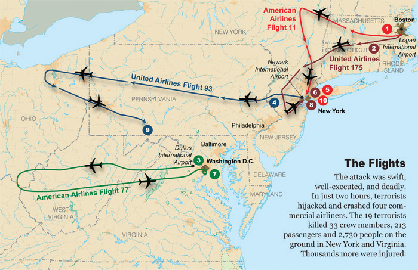
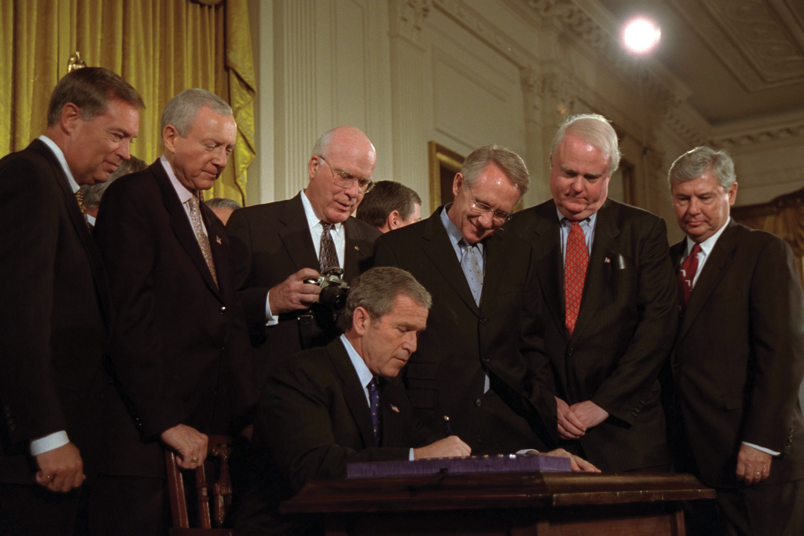
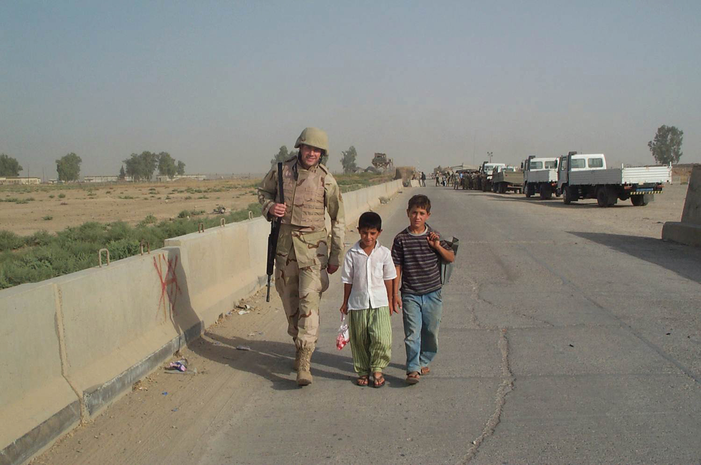
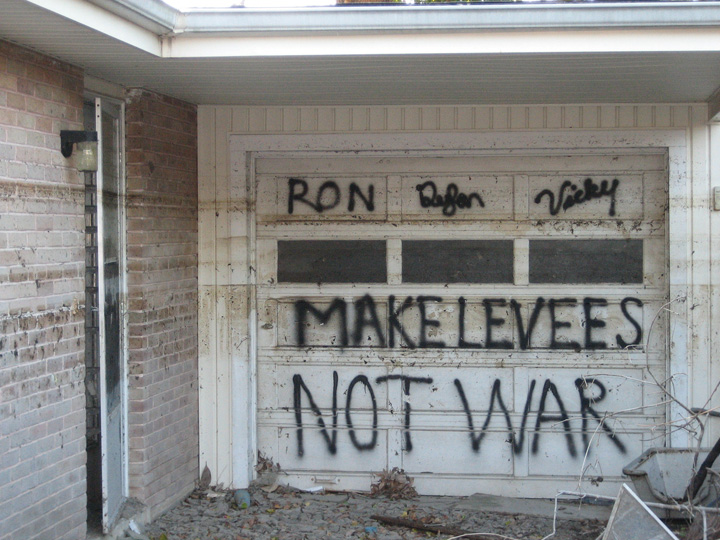
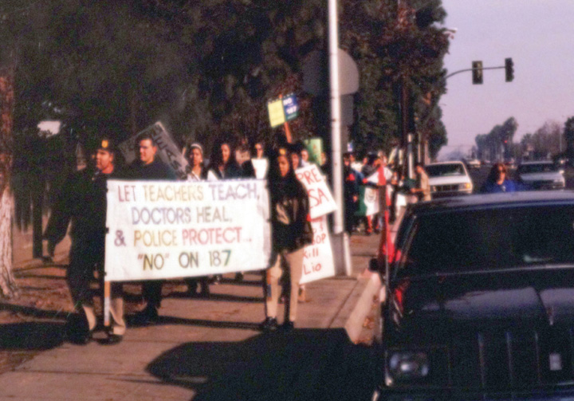
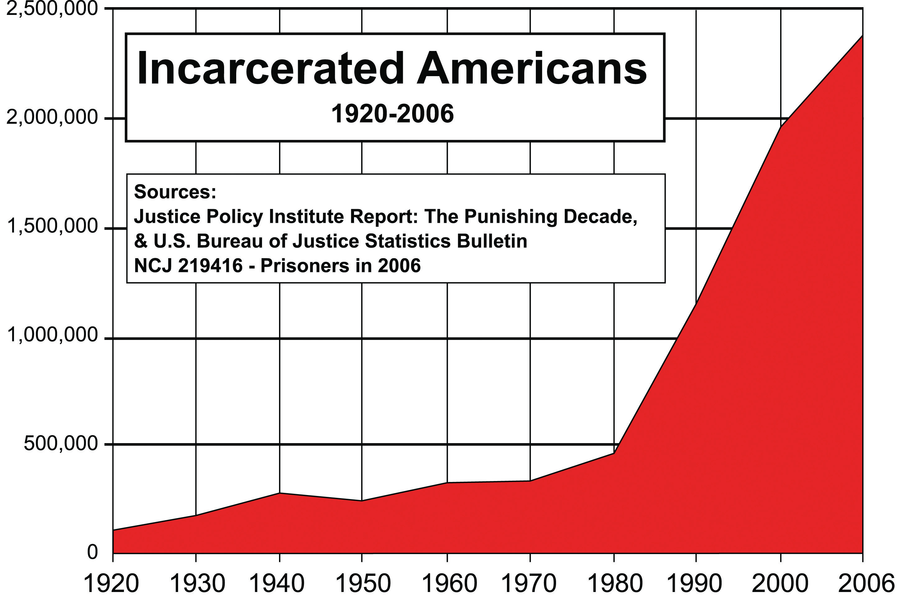
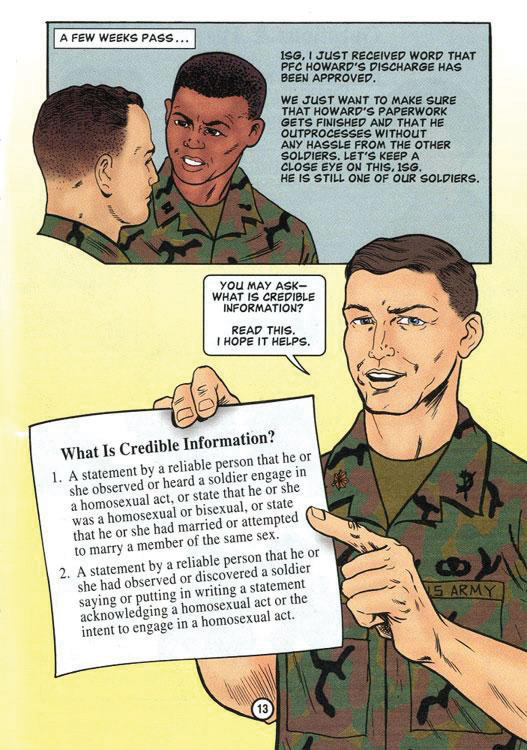

The end of the Cold War and the disintegration of the Soviet Union left the United States as the only military superpower. Some hoped that the nation would respond with massive reductions in military spending, perhaps even an “America first” policy that was similar to the isolationism of earlier periods in US history. Taxpayers had spent $4 trillion building nuclear weapons and trillions more maintaining its military and fighting proxy wars around the globe. Two generations had lost their lives fighting in wars many believed were a mistake and for causes that seemed no longer relevant. Others hoped that America would use its unrivaled military and economic power to promote democracy and human rights around the globe. Still others saw the end of the Cold War as an opportunity for profitable business expansion via globalization.
In many ways, each of these ideas affected US diplomacy in the post–Cold War years. However, even after the fall of Communism, US foreign policy was as much a response to the actions of others throughout the globe as it was an attempt by Americans to shape the world around them. A series of economic crises reminded Americans that their economy and their nation were part of a global system. The cowardice of nineteen terrorists on September 11, 2001, likewise reminded the nation of its vulnerabilities, while the response to this attack demonstrated the character of its people. The attack also awakened the world to the ways that the Cold War had obscured ethnic, religious, and regional conflicts in places such as Central Europe, Africa, and the Middle East. The relationship between the two biggest challenges of the post–Cold War era—global security and economic stability—would shape the US response to the terrorist attacks and define the politics of the next two decades.
Clinton appointed more women and minorities to meaningful positions in the federal government than any president in the past. Madeleine Albright was Clinton’s secretary of state while Janet RenoThe first female attorney general and a leading figure in the Clinton administration, Reno was frequently in the public eye due to a number of high-profile crimes and controversies, such as the Branch Davidian siege, the Oklahoma City bombing, and the World Trade Center bombing of 1993. served as attorney general. Together, these women led the Clinton administration’s efforts to confront domestic and international terrorism. At home, Clinton supported a number of antipoverty programs and proposed a federal plan to extend health care coverage to all citizens. Clinton also sought to maintain his reputation as a moderate. As a result, the president angered many of the more liberal members of his party who had hoped he would reverse the conservative policies of previous administrations and expand the welfare state. Clinton believed the increasing polarization between the political left and right was an opportunity for presidential leadership. If he could steer a course between liberals and conservatives, Clinton believed, he might win support for his health care reform bill while still being perceived as a moderate that united the country.
The president created a few modest programs that won liberal support. One of these programs was AmeriCorps—a federal work program that employs mostly younger people and seniors in a variety of community service fields. After Clinton’s health plan floundered, however, it appeared to many liberals that Clinton had decided that the easiest way to be viewed as a moderate was to adopt popular Republican initiatives as his own.
Welfare reform provides one of many examples of Clinton’s efforts to steer a middle course between both liberals and conservatives. As a candidate, Clinton had tapped into the suspicion raised by conservative politicians regarding “welfare mothers.” Placing stricter limits on direct payments to welfare recipients, the Clinton administration promised to transform welfare into a program that assisted only those who were striving for independence. Toward this goal, Clinton supported stricter regulations on direct payments. He also approved a significant increase of the Earned Income CreditA tax credit that some low-income wage earners are eligible to receive with the intention of making employment at such a job more financially rewarding and thereby producing a stronger incentive to work rather than seek governmental aid., which offered an annual payment to those who worked at low-paying jobs rather than application for welfare. The amount of the credit was based on income and the number of dependents for which a low-income worker was responsible.
Clinton defended the plan as a means to reward those who worked. He pointed out that most individuals on welfare would make only slightly less than a full-time worker at a minimum-wage job unless some adjustment was made. While Clinton also supported a modest increase to the minimum wage, he believed that tax credits for the working poor were necessary to provide incentives for people to get off of welfare. Critics of the plan were angered that those who qualified for the Earned Income Credit paid no federal tax yet would still receive a tax refund under the new plan. This new policy seemed even more unfair to some individuals in the wake of increased tax rates for some families. At the same time, Clinton’s support for curtailing direct welfare payments also angered some on the left.
Figure 14.1
President Clinton appointed more women to his cabinet and senior staff than any previous president. To the immediate left of President Clinton is Secretary of State Madeleine Albright. In the bottom right corner is Janet Reno, the first woman to hold the position of attorney general.
Clinton’s most ambitious domestic initiative was also the most controversial of his entire eight years in office. As a candidate, Clinton seldom missed an opportunity to talk about the rising costs of health care he believed were crippling the economy and bankrupting families. Clinton’s supporters pointed out that there were nearly 40 million Americans without health insurance—most of whom were children or full-time workers. If elected president, Clinton promised sweeping legislation that would offer universal health care for all Americans under a federally operated managed-care plan that was similar to the offerings of many private insurance companies. Clinton’s supporters argued that because the government would instantly become the largest insurer in the nation, the government would be able to regulate the prices that doctors and hospitals charged. Although a doctor could still charge any amount she wished, the federal government would only pay a certain amount for any particular service. This was similar to the practice of private insurance companies that also established maximum prices they would pay for different procedures and prescriptions. The difference, Clinton believed, was that the federal government would insure so many people that most doctors would have to lower their costs to meet the government rate or else lose the business of numerous patients. Opponents of the plan countered that increased government bureaucracy would either increase the costs of health care or cost taxpayers money.
Clinton’s supporters provided numerous statistics in an effort to show that government intervention would save money and improve care. The campaign against Clinton’s plan was bankrolled by organizations representing insurers, drug companies, hospitals, and physicians. As a result, most Americans questioned much of the information they were hearing as either politically biased or motivated by the medical industry’s own financial interests. However, the plan’s opponents were able to raise the specter of “socialized medicine” by connecting suspicion toward bigger government with the fear that regulating prices would reduce the quality of care. Just as government control over prices decreased the incentive for innovation and quality control in Soviet Russia, Clinton’s opponents argued, establishing maximum reimbursement rates would reduce competition among physicians and hospitals.
The comparisons between America’s health care system and some of the sensationalized tales of malpractice under Socialism were likely unfair. However, Clinton’s plan was complex and few inside or outside of government actually read its provisions. In addition, some Democratic leaders were upset that they had not been consulted in the drafting of the plan. Some Democrats even offered their own competing plans, which led to divisions within Clinton’s own party. Other opponents utilized misogynistic imagery against First Lady Hillary ClintonAttorney and wife of President Bill Clinton, Hillary Clinton was the first presidential spouse to have an independent career at the time of her husband’s election. As First Lady, Clinton led the effort for health care reform and other initiatives. She was elected to the US Senate in 2000 and was a leading contender for the Democratic presidential nomination in 2008. and other women who occupied leading roles in the taskforce that drafted the president’s plan. These opponents derided the plan as “Hillary Care,” creating the image that the president’s wife was really in charge of the White House in ways that played upon negative images of powerful women. As a result of all these factors, Congress rejected Clinton’s plan. Its failure cast a shadow over the rest of the Clinton administration and reduced the ambition of his future proposals.
Clinton had directed much of his energy to his failed health care initiative, believing that his electoral victory was a mandate from voters in support of his plan. Although the recession of the early 1990s was fading, symptoms of economic decline lingered and the president had not passed any major legislation in his first two years in office, despite enjoying a Democratic majority in both houses of Congress. That majority soon evaporated following the 1994 midterm elections as Republicans turned the congressional elections into a national referendum on Clinton’s first two years in office. United under the leadership of Georgia congressman Newt GingrichThe Republican Speaker of the House between 1995 and 1999 and a leading conservative politician, this former historian at the University of West Georgia introduced a platform known as the Contract with America that led to the Republican victory in the congressional elections of 1994., Republicans in congressional districts across the nation ran under the same banner and promised a new “Contract with AmericaA platform that united Republican congressional candidates during the 1994 election with its demands for less government, balanced budgets, and support for socially conservative causes..” The contract itself contained a lofty preamble lauding conservative “family values.” It also included a list of resolutions that called for tax breaks, reductions in the size of the federal government, numerous governmental reform measures, and support for socially conservative initiatives.
Democrats countered that the contract was little more than propaganda—a vague collection of clichés and catchphrases aimed at delivering votes rather than guiding policy. However, many of the provisions within the contract were quite specific. For example, one provision required more transparent accounting procedures—while another required full disclosure of the congressional proceedings. Some of the measures resembled the Populist crusade of the century prior, such as term limits for congressional committee chairs and an end to closed-door sessions. Even sweeping provisions such as a Constitutional amendment requiring balanced budgets every year appealed to most Americans as the national debt approached $5 trillion during the 1994 election.
Figure 14.2

President Clinton delivering the 1997 State of the Union address while Vice President Al Gore (left) and House Speaker Newt Gingrich (right) appear in the background.
The contract placed Democratic candidates on the defensive and defined the terms of the election in many congressional districts. Democrats responded that many provisions of the contract might sound good in the abstract but were either too vague to represent a clear statement of policy or potentially dangerous because they might lead to unforeseen consequences. For example, most Democrats conceded that the contract’s support of the balanced-budget amendment made sense in principle. At the same time, Democrats countered, the amendment might limit the nation’s ability to prevail in times of war or economic crisis. However, the Democrats did not have a similar unified platform and were vulnerable to voter frustration after two years of controlling both Congress and the White House. Republicans were able to solidify the association in the minds of many voters between Democrats, higher taxes, bigger government, and the failure of Clinton’s health care program. United behind the Contract with America, the Republican Party captured both houses of Congress for the first time since the 1950s.
The Republican Congress proposed dozens of bills inspired by fiscally conservative ideas that aimed to reduce corporate and capital gains taxes. They also sought to reduce government spending on social programs that assisted the poor and promoted education. Federally funded programs in the arts and humanities were especially vulnerable, along with welfare programs such as Aid to Families with Dependent Children (AFDC). Others sought to promote causes supported by social conservatives like eliminating affirmative action, legalizing school prayer, and banning the burning of the US flag. Few of these bills regarding socially conservative causes were ever passed, however, and many historians believe that these measures were more designed to win the support of conservative voters than actually become law.
Other’s criticized the Contract with America’s avoidance of the issue of abortion as evidence that the Republicans offered only lip service to social conservatives. Although restricting abortion was a leading conservative issue throughout the 1994 election, the contract avoided any mention of the topic. In fact, some critics pointed out the likelihood that the contract’s “Personal Responsibility Act” would encourage abortion. This law sought to deny additional welfare support to mothers of multiple children. It also prohibited any federal assistance to mothers under the age of eighteen.
Opponents of abortion were the most loyal supporters of the Republican ascendency and hoped the party would finally reverse Roe v. Wade and make abortion illegal once again. However, most within the Republican majority avoided the controversial issue. Laws banning flag-burning passed the House of Representatives but were defeated in the Senate. These were largely symbolic gestures, however, because the Supreme Court had long maintained that such displays were protected under the Bill of Rights. Social conservatives continued to win supporters through populist appeals against a “liberal” Supreme Court that outlawed school prayer while protecting flag-burning. Many political observers were quick to point out that the majority of justices had been appointed by Republican presidents. Others argued that the Republicans spoke the language of the New Right but were more likely to pursue fiscally conservative policies once in office. As a result, many social conservatives felt betrayed when the Republican Congress did not unite behind legislation outlawing abortion.
When it came to fiscal politics and governmental reform, the Republican majority honored their campaign promises and aggressively promoted the provisions of the Contract with America during the 1995 and 1996 legislative sessions. The most significant of these provisions was the proposed Balanced Budget AmendmentA proposed Constitutional amendment that would have prohibited deficit spending by requiring each session of Congress to approve a balanced budget. to the Constitution. This amendment required Congress to submit a balanced budget each year unless three-fifths of both houses of Congress agreed to waive the requirement. The intent of the amendment was to reverse the annual deficits that had accumulated each year. Defenders of the amendment argued that members of the House of Representatives could seldom be counted on to cut popular governmental programs or raise taxes given the realities of the two-year election cycle. Given the measure’s popularity among a public that had grown wary of the growing national deficit, the bill passed the House. However, it failed to garner the necessary two-thirds vote in the Senate and was never forwarded to the states for ratification.
A second measure intended to cut government waste gave the president of the United States the authority to sign a bill into law while rejecting certain attached provisions called “riders.” Riders were provisions that were frequently attached to a proposed bill in order to secure the support of a specific member of Congress who might have otherwise voted against the bill. For example, a law regulating mine safety might be unpopular with a few members of a particular congressional committee overseeing such matters. To secure their support, a rider providing federal funding for a bridge or other project in each of these members’ districts might be added as a rider to win their support. Riders were usually not this overt, but they did result in billions of dollars being spent on “pet” projects that might not have passed Congress on their own merit. The Republican Congress approved a law granting presidential authority to delete riders while approving the law itself through the “line-item veto.” However, a subsequent decision by the US Supreme Court declared that a president’s use of the line-item veto was an unconstitutional subversion of the powers of the legislative branch. As a result, the line-item veto was a short-lived reform.
Although Clinton had championed the role of government in uplifting the poor in 1992, the Republican victory of 1994 demonstrated that reducing welfare spending was still a popular issue among voters. Attempting to chart a course between witch hunts for chimerical “welfare queens” and blaming poverty on the greed of the wealthy, Clinton hoped to promote reform while bolstering his image as a moderate. Clinton promised to “end welfare as we know it” by limiting direct payments and increasing federal funding for job training.
The president’s reform policies borrowed heavily from Republican ideas regarding welfare. For example, Clinton supported a provision that would have placed a time limit on the number of months a person could receive benefits. In addition, noncitizens were ineligible for any payments under Clinton’s plan, regardless of whether they were legal residents. Clinton also backed an anticrime bill that provided cities and states with $30 billion to hire additional officers. This law passed Congress, and also introduced the standard of three convictions leading to lifetime imprisonment for federal crimes. This “three strikes” rule was soon adopted by many state governments. With existing laws that made the possession of even small quantities of illegal drugs a felony, the prison population that had grown so dramatically during the War on Drugs continued to expand. Clinton also backed an increase to the minimum wage (from $4.25 to $5.15 an hour) that won the support of liberals and the working class.
From the perspective of many House Republicans, Clinton was “stealing” some of their most popular ideas. Republicans responded by making their promise to reduce the size of government and balance the federal budget the cornerstone of their platform. The issue resonated with voters, was consistent with Republican ideas about reducing spending, and supported the conservative goal of liquidating the welfare state. Interpreting their dramatic victory in the congressional elections of 1994 as a mandate to slash government programs, Republicans closed ranks behind a budget and tax plan proposed by House leaders.
Clinton submitted a budget that also enacted significant cuts but retained a $200 billion deficit. The Republicans also submitted a budget. Because their plan included tax breaks and increases for defense spending, the Republicans had to make even deeper cuts to numerous social programs. The Republican plan did not spare popular programs such as Medicare and federally subsidized school lunches, two politically sacred programs that had ruined the political careers of those who opposed them in the past. Clinton and the Democrats responded by hammering away at the apparent support of their opponents for billions of dollars in tax cuts for the wealthy, no tax cuts for the poor and the middle class, and reductions for programs benefitting the neediest children and seniors.
The Republican plan to reduce taxes for the wealthy and corporations while appearing to support plans that would take food from children and medicine from seniors astounded political observers. However, the Democratic Party also appeared to be its own worst enemy and a party divided among itself. Even as the Democrats found some unity in their counteroffensive against the Republican budget, the division between the president and more liberal leaders of his party remained. This gulf was exacerbated by the 1994 election, which had resulted in the defeat of Southern and Midwestern Democrats that had supported the president. These were the regions where the new Republican strategy had worked the best, and they were also the regions where Democrats were more likely to subscribe to Clinton’s moderate views. Those Democrats that had survived the 1994 election tended to be from more liberal and urban Congressional districts. These Democrats opposed Clinton’s acceptance of deep cuts to social programs. They were especially angered by Clinton’s revised budget, which included modest cuts for Medicaid. From their perspective, the president was surrendering a key issue that might have won seniors back to the Democratic fold.
Congress and the president spent the majority of 1995 and 1996 wrangling over budgetary matters. When the Senate and the president refused to approve the House budget, Gingrich and the Republicans refused to compromise, which led to a temporary shutdown of nonessential federal services. National parks and federal offices closed while payments for millions of government employees and recipients of Social Security were delayed. Although the shutdown was caused by a refusal of both sides to compromise, most Americans blamed outspoken Republicans such as Gingrich for the shutdown. The Republicans quickly reversed course and restored Medicare spending, yet many Americans were convinced that Gingrich and his supporters precipitated the standoff as a political calculation rather than an ideological commitment to fiscal responsibility.
Clinton’s strategy in the 1996 election was based on appealing to as many voters as possible by portraying himself as a moderate within a polarized system. The strategy required distancing himself from liberals without alienating his liberal base. The key for Clinton was to appeal to moderate conservatives. However, if Clinton strayed too far to the political right, he risked the possibility that a popular liberal candidate might challenge him for the Democratic nomination or run as a third-party candidate. Clinton’s ability to chart a middle course on issues such as affirmative action helped convince popular Democrats like Jesse Jackson to support Clinton’s bid for reelection rather than entering the race. Had Jackson decided to contend Clinton’s reelection, he would have eroded the president’s support among many liberal and minority voters. Once Jackson was on board rather than an opponent, Clinton was able to occasionally veer to the right of his own party because there were few other potential Democratic challengers.
Clinton faced the Republican Senator Bob DoleA World War II veteran and senator from Kansas who was defeated in his 1996 bid for the presidency by Democrat and incumbent Bill Clinton. in the general election. At age seventy-three, Dole was both an experienced and well-respected leader but also an aging career politician who had failed to inspire voters during the Republican primaries. Dole’s brand of conservatism was more moderate than the drift of the Republican Party under Gingrich. The Kansas senator expressed his personal support of the conservative “family values” of the New Right. At the same time, he did not believe that government should accommodate any particular religious views. Dole also believed that the attack led by Gingrich and others upon liberals was both divisive and a distraction from the role of responsible government.
Dole attempted to distance himself from the controversial issue of abortion, but reluctantly embraced an antiabortion provision that was necessary to shore up his support among evangelicals. However, Dole’s public opposition to abortion reduced the candidate’s appeal among a number of undecided voters, especially female voters, who might have otherwise voted for Dole. Clinton also undercut the potential of Dole’s support among undecided voters by supporting a number of socially conservative initiatives. The most controversial of these was the 1996 Defense of Marriage ActA federal law passed in 1996 that defined marriage as a union between a man and a woman. The law does not prohibit states from performing or recognizing same-sex marriages, but it does not compel a state to recognize the legality of same-sex marriages performed in other states. that legally defined marriage as a union between a man and a woman. Clinton’s opposition to same-sex marriage contrasted sharply with his avowed support for gay rights in the past. However, it cost him few votes given the unlikelihood that gay-marriage supporters would vote for a Republican.
Dole seemed noncommittal himself when it came to the budgetary matters. The senator called for a 15 percent tax cut for all Americans while promising to increase defense spending and balance the budget. Voters asked how Dole could deliver these seemingly irreconcilable objectives, a question the Republican candidate seemed to dodge as he gave a series of uninspiring speeches across the nation. Clinton matched Dole’s travel schedule, tipping the balance between running for president and being the president as he crisscrossed the country and turned every address to the nation into a stump speech.
Clinton’s campaign also may have crossed the boundary between fundraising and selling access to the president. Clinton fundraisers allowed dozens of foreign nationals, some with shadowy connections and apparent agendas, to meet with the president for a price. Later investigations would show that Clinton’s campaign was even financed by allowing major donors to stay in the White House’s famed Lincoln bedroom. The aggressive fundraising allowed Clinton to approach the massive funding of the traditionally probusiness Republican Party. While Clinton’s possible fundraising violations drew the most attention, both campaigns pushed the limits of campaign-finance regulations. For example, recent legislation limited the amount of money an individual or corporation could donate to a particular candidate. However, these same laws permitted unlimited donations of “soft money,” which could be used to support a particular issue or party. Both campaigns skirted these restrictions, financing advertisements that implicitly endorsed a candidate. They also made use of political action committees and other proxy organizations to evade the law’s funding limits.
The gender gap in presidential elections had historically been almost imperceptible. In 1996, however, Dole polled slightly more votes among men while 16 percent more women voted for Clinton. With this unprecedented support of female voters, Clinton won a decisive victory with 379 votes in the Electoral College to Dole’s 159. Even if Dole managed to win all of independent candidate Ross Perot’s 8 million votes, Clinton would have still won the popular vote by a slim margin.
The 1996 presidential election was about personalities and featured Clinton’s ability to adopt popular conservative ideas and programs as his own. Clinton best demonstrated this ability regarding the issue of welfare reform. In 1996, Clinton supported a plan that eliminated Aid to Families with Dependent Children (AFDC), a federal welfare program that had provided cash payouts to poor families since its creation as part of the Social Security Act of 1935. The new law replaced AFDC with Temporary Assistance for Needy Families (TANF)A welfare agency that replaced Aid to Families with Dependent Children, TANF provides grants to individual states to administer their own welfare programs.. This program contained stricter regulations and a two-year limit that applied to able-bodied adults.
Perhaps ironically, this time limit was specifically mentioned in the 1994 Contract with America. Clinton made only one significant modification to the Republican idea: if an able-bodied adult who had been removed from the welfare rolls drifted back into poverty, the two-year clock would restart and the individual could receive welfare once again. Clinton’s plan also capped lifetime benefits at five years, after which an able-bodied person would be completely ineligible for government aid. Clinton’s TANF plan even borrowed from the New Federalism of Nixon by having individual states administer the funding for the program. States were granted wide latitude in determining how their TANF programs are administered. Some states placed even shorter limits on the amount of time a person might draw benefits and also required proof that an individual was actively searching for a job.
Liberals felt that Clinton’s TANF plan betrayed their party’s commitment to providing a safety net for the poor. These individuals pointed out that the vast majority of AFDC recipients were dependent children, as the name of the now-defunct plan suggested. They also reminded voters that 11 percent of the population and 20 percent of children were below the federally established poverty level. Defenders of the plan argued that states would be more effective in administering funds and better able to make sure children were still provided for, even after their parents had used up their eligibility for welfare. Critics of the state-level plan also pointed out that many poor Americans migrated frequently in search of work. They feared that families might “fall through the cracks” of the system as they moved from one state to another and had to reapply and wait for benefits.
Clinton’s popularity increased during his second term—largely due to an economic boom and slight tax reductions for the middle class. Real estate and corporate profits grew rapidly and were reflected in rising stock values that benefitted more and more Americans given the popularity of mutual funds and self-service online brokers. The boom was especially evident in the technology-dominated NASDAQ stock exchange, which quadrupled during Clinton’s second term. Clinton’s popularity defied a series of investigations into his own finances, which began during his first year in office. In 1993, an independent government investigator responded to allegations of malfeasance regarding the Clinton family’s real-estate investments in the Whitewater River Valley of Arkansas. Investigator Ken Starr soon expanded the search to include Clinton’s fundraising activities, the use of government travel funds, and the disappearance of files related to these investigations. Although each investigation raised questions regarding the character and conduct of the president, the investigations turned up little concrete evidence of wrongdoing.
The investigation may have tarnished the image of the Clinton administration, but most Americans quickly grew tired of the very technical legal questions about what appeared to be at most a minor and complicated violation. Investigations regarding Clinton’s personal life, however, quickly became fodder for late-night talk shows and entered conversations around the country. A former Arkansas employee named Paula Jones accused the former governor of both sexual harassment and a consensual extramarital affair. Once again, there was little evidence that Clinton had committed a crime, and Jones failed to collect the hundreds of thousands of dollars she sought.
The Jones affair was closely followed by a more serious revelation of a sexual relationship with a White House intern. For months, the nation largely ignored world events, health care reform, and other budgetary concerns while the sordid details of the Monica Lewinsky scandal came to light. Given the relentless and apparently personal nature of independent counsel Ken Starr’s previous investigations, many Americans discredited the evidence Starr produced regarding the Lewinsky scandal. However, they also refused to believe the president’s denials and were angered when Clinton later revealed that he had lied under oath in an effort to cover up the affair. It was for this crime rather than the affair itself that Clinton was impeached by the House of Representatives. However, the Senate refused to remove the president from office, and most Americans agreed that his indiscretion was neither a high crime nor a misdemeanor. Perhaps unfairly, by the time it was all over, most Americans had a lower opinion of Kenneth Starr, Lewinsky, and even the president’s wife than the man who had lied and committed adultery.
Clinton’s ability to escape scandal angered conservatives who had hoped the Lewinsky affair would become the Democrat’s Watergate. In the preface of his Contract with America, Newt Gingrich and other conservatives had promised to restore the dignity of Congress and end the “cycle of scandal and disgrace” many Americans now associated with high political office. Gingrich was among the president’s leading inquisitors and perhaps the loudest voice of those who called for Clinton’s resignation or removal. Ironically, a handful of other Republicans who led the charge against Clinton were later convicted of improper sexual relations with underage congressional pages. Gingrich himself was found to be having an extramarital affair with a much younger member of his staff who later became his third wife. Gingrich soon resigned from office after facing ethics charges and criticism for his personal life.
Clinton’s continued invincibility to scandal led some to compare the president to the “Teflon” coating that prevented material from sticking to pots and pans. However, Clinton’s ability to withstand multiple scandals likely had more to do with the economy than any other factor. The official budgetary surpluses announced by the Clinton administration in its final year were the result of an economic boom that produced increased tax receipts. As a result, Clinton presided over an era of prosperity that allowed the federal government to produce balanced budgets and even a small surplus in Clinton’s final years. Despite all of the debate in the early 1990s about the need for sacrifice, the economic boom of the middle and late 1990s created millions of new jobs that allowed the government to balance the budget while lowering taxes and avoiding controversial reductions to popular government programs.
Attorney General Janet Reno played a much more public role than most attorney generals, beginning in the spring of 1993 with her controversial decision to lay siege to the compound of cult leader David Koresh in Waco, Texas. The compound caught fire during the government raid and ATF agents entered to find that over seventy of Koresh’s followers had either been killed or committed suicide. Three years later, two domestic terrorists cited the raid as justification for a deadly attack on a federal building in America’s heartland.
The Oklahoma City BombingThe deadliest terrorist attack in the United States until September 11, 2001, the Oklahoma City bombing killed 168 people when a truck bomb exploded next to a federal building on April 19, 1995. of April 19, 1995, claimed 168 lives, making it the most deadly act of terrorism on American soil up to that time. In an era when the nation was politically divided, this cowardly and senseless attack reminded Americans of their commonalities. Millions of complete strangers donated money for the victims’ families. Others waited in long lines hoping to donate blood that might aid the hundreds who were wounded in the attack. The president’s moving speech also restored his sagging public image and pushed political leaders toward reconciliation. The government responded in unusually bipartisan fashion following the attacks, providing assistance to victims and significantly increasing funding for antiterrorism programs, which helped to thwart a number of similar plots in the coming decade.
Figure 14.3

The 1995 Oklahoma City bombing was the deadliest terrorist attack on American soil until the attacks on September 11, 2001.
Americans also donated generously during international crises such as the famines of East Africa during the mid-1980s. By 1990, the East African nation of Somalia was affected by a crisis that could not be solved by bread alone. Somalia had been colonized by Italy a century prior. Somalia secured independence in 1960, but suffered from the same instability that plagued most postcolonial nations. An expanding civil war engulfed the capital city of Mogadishu in 1990 and led to the dissolution of the government. Rival factions declared themselves in power and attempted to assert their will by force while the people of Somalia suffered from the combined effects of famine and civil war. Hundreds of thousands of civilians had died, and the situation was rapidly declining when the United Nations approved the use of troops to restore order and assure that international aid reached civilians.
In 1992, Clinton increased the small contingent of humanitarian forces already in place through Operation Restore Hope. Sending troops to help distribute food and other relief supplies in a time of famine appealed to the sensibilities of most Americans. However, it also threatened the interests of local gangs and profiteers who had risen to power by exploiting the famine and political disorder. Tensions quickly exploded as US troops attempted to locate and capture local warlords who were thwarting humanitarian efforts by stealing most of the food and selling it to purchase more weapons. In the summer of 1993, the most dangerous and powerful Somali warlord killed two dozen UN peacekeepers from Pakistan. The bodies of these humanitarian troops were mutilated by the supporters of this warlord to send a message to any who dared to oppose them.
US Special Forces responded with a message of their own, launching an ambitious raid against this particular warlord in October 1993. The conflict quickly escalated into the Battle of MogadishuA street battle between US forces and militiamen loyal to Somali warlords in October 1993 that led to President Clinton’s decision to withdraw US troops from Somalia. The battle was popularized by the book and movie Black Hawk Down. when rebel forces shot down two Black Hawk helicopters and disabled several other vehicles with rocket-propelled grenades. US troops under assault and cut off from their base rallied until a rescue operation secured their safety. However, eighteen soldiers had been killed. Absent a clear threat to the security of the United States and shocked by graphic images of rebel soldiers dragging the bodies of US troops through the streets, Clinton and the US public favored withdrawal of US forces.
Figure 14.4

Marines search a Mogadishu market for caches of hidden weapons prior to the 1993 Battle of Mogadishu that was popularized by the movie Black Hawk Down.
In the wake of the Battle of Mogadishu, a hasty and precarious ceasefire agreement was reached in the spring of 1994. Clinton’s decision to completely withdraw from Somalia following this tenuous “peace” drew heavy criticism. Many recognized that local warlords would simply resume their assault against the people once US forces left the region. These individuals believed that the United States was abandoning its peacekeeping mission and believed Clinton had defaulted on his promise to restore peace and stability in Somalia. However, few American or UN officials were willing to devote the material and human resources required to reach that objective. Armed with hindsight, some critics believe that the hasty withdrawal from Somalia represented a lost opportunity to develop goodwill in the Muslim world. At the very least, these individuals believe that the early exit of US forces emboldened those such as Al Qaeda who had provided support to some of the area warlords.
Ethnic conflict erupted in the African nation of Rwanda in April 1994. The conflict in Rwanda represented the combination of a century of imperialism and decades of ethnic conflict between members of the Tutsi minority and Hutu majority. Seeking stability rather than development, during Rwanda’s colonial period, the ruling Germans had placed Tutsi leaders in control. This decision inflamed existing tensions between Tutsi leaders and the majority of Rwandans who were members of the Hutu tribe. The Belgians later controlled Rwanda and continued the German tactic of utilizing existing divisions to administer the colony. Like the Germans, Belgian officials played both ethnic groups against one another.
Figure 14.5
Following the Rwandan Genocide in 1994, many Hutus fled the country and sought safety in makeshift camps such as this refugee camp in nearby Zaire.
When the Belgians were finally forced to grant Rwanda its independence in 1962, the sudden departure of the former colonial rulers created a power vacuum that resulted in a series of civil wars that bordered on genocide. In 1994, that border was crossed when a group of Hutu warlords sought to eliminate the Tutsis forever. The United States had no strategic interests in the region and declined intervention. From a distance, the 1994 conflict appeared to be simply another violent episode of ethnic strife in postcolonial East Africa. When ten UN peacekeepers were among the early victims of the violence that broke out in the summer of 1994, the United States responded by calling for the complete removal of UN forces.
Dramatic pleas for help were ignored. For example, a clergy member who had sought refuge within a hospital wrote a desperate letter calling for help. At the time, the hospital was surrounded by Hutus armed with machetes and ordered to kill each person inside. His appeal fell upon deaf ears, and the entire hospital was massacred. The clergyman’s plea began with the following words: “we wish to inform you that tomorrow we will be killed with our families.” This chilling exhortation later became the title of a powerful and graphic narrative of the killings written from eyewitness descriptions of the 1994 Rwandan GenocideThe attempt of Hutu extremists to exterminate the entire Tutsi minority in Rwanda in 1994. The Tutsi minority had ruled Rwanda in recent years, and some of the Tutsi leaders had used violence against the Hutu majority, which led to both fear and ethnic hatred of all Tutsi among many Hutus.. Within one hundred days, approximately 800,000 Rwandans had been murdered, mostly civilians killed by other civilians with machetes and other agricultural tools.
Area African nations intervened, and forces controlled by the Tutsi minority rallied and seized control of the Rwandan government by late summer. This development prompted the mass exodus of Hutus. Even though most Hutu refugees had not participated in the slaughter of the Tutsis, they feared retribution. These Hutu evacuees had no place to go other than cholera-infested refugee camps. Without an understanding of Africa’s colonial past, most Americans interpreted the problems of the central African nation in the context of their own miseducation. Desirous for a simple solution for a “backward” nation in the center of a continent they had never learned about in school; most adult Americans continued to marginalize both Africa and Africans by convincing themselves that there was simply nothing that could be done to prevent suffering in every corner of the world.
Clinton later confided that his unwillingness to intervene in Rwanda was his chief regret during his entire eight years as president. Clinton scored high marks in the fall of 1993 when he helped to facilitate a meeting between Israeli Prime Minister Yitzhak Rabin and the leader of the Palestinian Liberation Organization (PLO)An organization formed in 1964 with the goal of creating a homeland for the Palestinian people that has sought the elimination of the state of Israel for most of its existence. The PLO had reinvented itself in recent years and is now recognized by the United Nations, although many Americans and people of Jewish descent still consider the PLO to be a terrorist organization. Yasser Arafat. As had been the case with President Carter’s historic rapprochement between the leaders of Israel and Egypt, the simple acknowledgement by Israel and the PLO of each other’s legitimacy may have been the most significant outcome of the meeting. The two leaders signed an agreement regarding Palestinian sovereignty within the West Bank and Gaza Strip—two areas that Israel had controlled since the failed 1967 invasion of Israel by Egypt, Syria, and Jordan.
The actual negotiations occurred in Sweden, and the agreement became known as the Oslo AccordsAn agreement between Israel and the Palestinian Liberation Organization (PLO) intended to serve as a framework for future negotiations regarding Israeli and Palestinian sovereignty in disputed territories and other matters dealing with relations between Israelis and Palestinians.. The formal acceptance of the Oslo Accords occurred during a White House ceremony attended by Rabin and Arafat in September of 1993. The agreement required Israeli military forces to withdraw from the West Bank and Gaza Strip. It also created an organization to oversee the gradual transfer of authority for these areas to the Palestinian people. Most of the details regarding the transfer were intentionally left vague and were supposed to be decided during future negotiations. At the time, many around the world optimistically believed that the Oslo Accords provided the framework by which a peaceful resolution of the Israeli-Palestinian conflict might be achieved.
Figure 14.6

Israeli Prime Minister Yitzhak Rabin shakes hands with Yasser Arafat, leader of the Palestinian Liberation Organization in 1993. Many hoped this meeting and the Oslo Accords would lead to a peaceful settlement of the historic conflict between Palestinians and Israelis.
However, details matter and neither side appeared willing to trust the other enough to implement even the first steps they had agreed upon. Israel retained its military forces in the Gaza Strip and West Bank, while Palestinian officials proved unable to reduce the violence against Israelis in these and other areas. The Israelis also continued to construct settlements for Jewish settlers in these areas. A vicious cycle of blame emerged where Israelis cited continued Palestinian attacks as justification of their military presence while the Palestinians cited the continued Israeli presence for their actions. Future meetings brokered by President Clinton did little to end the mutual distrust that prevented the first stages of the Oslo Accords from being implemented. The peace process broke down as neither side was willing to disarm or even speak out against supporters who were committing acts of violence in their name. The violence prevented the formation of the interim governmental agencies that were supposed to provide Palestinians with limited sovereignty as a step toward peaceful coexistence and the eventual creation of a Palestinian homeland.
Following the American experience in Somalia, Clinton became cautious in his foreign policy. The president usually denied requests for troops. Instead, he attempted to thwart genocide, famine, and the development of nuclear and chemical weapons through policies of aid and sanctions. For example, Clinton negotiated an agreement with North Korea to halt its attempts to develop nuclear weapons in exchange for food and medicine that were to be distributed among the needy civilian population. Many correctly assumed that much of the aid would be seized by the corrupt government, which would continue its attempts to develop weapons of mass destruction. An uprising in Haiti resulted in the deployment of a small contingent of US soldiers, mostly to reinstall the democratically elected Jean-Bertrand Aristide as president. Once US troops left the impoverished island, Aristide ruled the nation as a dictator, and violence and corruption returned to the island.
The situation was particularly disturbing in the Balkans where nationalist Serbs in Bosnia, with the support of Serbian President Slobodan Milosevic, had been killing Muslim civilians for many years. As a candidate, Clinton had been critical of Bush’s refusal to intervene in the Balkans. As president, however, Clinton followed a similar policy. Clinton maintained Bush’s arms embargo that was intended to curb violence. This embargo disproportionately hindered the Muslim minority who had fewer weapons to begin with. Clinton recognized the shortcomings of his approach, but he had been deeply affected by the loss of American lives in Somalia. A political pragmatist, he devoted the bulk of his energies to domestic matters that proved politically popular. Even in retrospect, each of Clinton’s options regarding North Korea, Somalia, Haiti, and the Balkans might have led to thousands of US casualties and lengthy military occupations, with no guarantee of success.
Despite his attempt to avoid future deployments, the president was forced to take his attention away from the budget debates and other domestic matters in the summer of 1995 when Bosnian Serbs under Milosevic began slaughtering Muslims and other minorities. In July, Bosnian Serbs evicted the women and female children from the town of Srebrenica, which had a Muslim majority, and slaughtered the remaining 7,000 men and boys. By August, Serbian forces under Milosevic began shelling the city of Sarajevo.
Figure 14.7

A US Army engineer directs traffic across a pontoon bridge linking Bosnia-Herzegovina to Croatia, where many supplies and support troops were staged during the 1995–1996 peacekeeping mission in Bosnia. This image demonstrates the importance of engineers and other support troops in modern warfare.
The United Nations sent a small force of 6,000 peacekeepers while the United States debated what to do. Muslim fighters and the Croatians tentatively worked together in a successful counteroffensive that forced Milosevic to agree to peace talks that were held in Dayton, Ohio. The Dayton Accords created the new Federation of Bosnia and Herzegovina with a dual government backed by the belated presence of 60,000 NATO troops. From the perspective of the West, the United States had sent its own sons and daughters to protect civilians in a nation where it had little strategic interest. From the perspective of Muslims in Europe and around the world, the West’s delayed response occurred only after the bombing of Sarajevo rather than because of years of genocidal acts against the Muslim minority of Southern Europe.
In 1992, many of the nations of Western and Central Europe created the European Union (EU)An economic and political confederation of independent European nations that choose to utilize a common currency and follow other agreed-upon measures designed to reduce trade barriers between those members and promote trade and diplomacy., a confederacy that incrementally grew in its authority to regulate commercial and other international affairs. The United States, Canada, and Mexico responded by forming the North American Free Trade Agreement (NAFTA)A trade agreement between Canada, the United States, and Mexico that eliminates trade barriers, such as tariffs, between each nation. in 1993. NAFTA had been a leading priority of Republicans and was supported by the incoming Republican President George H. W. Bush. The agreement sought the complete elimination of trade barriers between the three nations. NAFTA angered many Democrats but was still supported by Clinton, who hoped to appear as a moderate and win the support of business leaders.
Environmentalists feared that NAFTA would reduce the effectiveness of protective legislation by encouraging corporations to relocate to Mexico. Labor unions and many individual Americans feared that it would also result in a loss of American jobs for the same reason. NAFTA was unpopular among most voters, partially because some politicians disingenuously equated its limited goals with the European Union. Unlike NAFTA, the EU sought to coordinate most governmental functions and even foresaw joint armies and a common currency. A decade later, the goal of a common currency was achieved when EU member nations adopted the euro as their medium of exchange. However, NAFTA has not expanded to include such collectivist policies but continues to arouse controversy among diverse groups of voters.
Although few nations beyond Europe expressed interest in creating a common currency, major summits were held seeking to reduce global trade restrictions. Many of these summits took place under the auspices of the General Agreement on Trade and Tariffs (GATT), which was signed by two dozen nations shortly after World War II. After four decades of GATT summits, GATT itself was replaced by the World Trade Organization (WTO)An organization that seeks to reduce trade barriers between nations, it replaced the Global Agreement on Trades and Tariffs in 1995. in 1995. The WTO is an international agency headquartered in Geneva that seeks to encourage free trade and reduce government restrictions regarding international commerce. The WTO is charged with promoting trade and economic development in ways that also protect the economies of member nations. However, many in the United States and around the world have criticized the WTO as a tool of wealthy corporations in developed nations that seek to practice new forms of economic imperialism.
These protests against globalization reached a crescendo in November of 1999 when an estimated 50,000 protesters disrupted the WTO summit in Seattle. A large number of these protesters were college students who joined a diverse movement of citizens who believed that the WTO was fueled by a corporate agenda. Many of the protesters were environmentalists who feared that the WTO would make decisions that would reduce standards and enforcement of environmental protection. Many also believed that developing industries in developing nations would be crushed by international competition. Labor unions were also present in Seattle, fearing globalization would permit corporations in developed nations with higher standards of living to lower wages and benefits or simply relocate their operations abroad. Others feared that unregulated markets would lead to the elimination of smaller companies and promote the growth of multinational corporations they believed operated like cartels.
Figure 14.8
An estimated 50,000 protesters demonstrated against the 1999 WTO summit held in Seattle. Many of these protesters are dressed as sea turtles due to their belief that globalization doomed many endangered species. The novelty of blue collar union members marching alongside environmental activists in opposition to the WTO led many to refer to the protesters as “teamsters and turtles.”
Many Americans viewed the protesters as lacking a positive agenda of their own, opposing globalization but lacking their own alternative. Others believed the protesters were motivated by a misguided and naïve belief in some utopian alternative to Capitalist development. The protesters responded that they had specific solutions and lacked only access to power, rallying behind a brief document circulated by students at the University of Washington and other Seattle-based colleges called the Declaration for Global Democracy. Together, the protesters rallied behind the document’s final exhortation of “No Globalization without Representation.” The five points of this declaration provided a bit more substance but still appeared vague to the document’s critics. They protested the WTO’s undemocratic structure and nontransparent methods. The document also challenged world leaders to ensure that human advancement rather than material acquisition would become the standard by which they measured the efficacy of global trade policies.
The students and their supporters also rallied behind something they called sustainable development, a standard that included human rights, worker safety and compensation, environmental protection, and reversal of global inequity. However, the popular image of the 1999 protests does not reflect the progressive tone of these goals. Similar to the labor protests of the late nineteenth century, the message of the protesters soon became moot when a handful of individuals became violent. In response, the police responded with what many considered to be excessive force. Erroneous reports that the protesters had attacked police created or solidified existing negative images of the protesters. The same was true of sensational reports of bystanders being assaulted. Although some news outlets printed retractions, the image of the anti-WTO meeting being dominated by radicals persisted and colored the view of many Americans toward those who protested against globalization.
This concern for maintaining free trade without harming the economies of member nations led to the derailment of several free-trade initiatives within developing countries in the early 2000s. This is especially true in areas such as agriculture, where millions of families depend on agriculture for their livelihood. American grain is often produced much more efficiently due to mechanization. It is also heavily subsidized by the federal government. As a result, many nations fear that the complete elimination of trade restrictions will result in their farmers being forced to compete with inexpensive American grain. While many point out that this development would provide relief for many impoverished urban dwellers, others fear that the competition would destroy the agricultural base of developing nations. If this happened, they argue, the result would be long-term dependency on foreign grain. The WTO launched a major series of conferences in Doha, Qatar, in 2001. The organization continues to meet in related conferences around the globe in hopes of resolving issues regarding agricultural subsidies and other global trade issues.
The WTO and other organizations dedicated to reducing trade barriers have also been derailed by environmental concerns. Environmentalists have shown that certain refrigerants and aerosol sprays deplete the layers of ozone gas in the earth’s atmosphere. These ozone layers absorb most of the potentially damaging ultraviolet light that radiates from the sun. Scientists demonstrated that chemical compounds in some refrigerants used in air-conditioning systems were especially dangerous as they neutralized the ability of ozone gas to block ultraviolet rays. As a result, laws were passed in the United States and other nations mandating the use of different refrigerants and regulating the chemicals used in producing aerosol sprays and other manufactured goods. The global nature of environmental concerns such as ozone depletion led to a series of UN initiatives such as the Kyoto Protocol. The result of a global summit on reducing greenhouse gases led by Vice President Al Gore, the Kyoto Protocol produced a binding treaty requiring developed nations to reduce their emission of greenhouse gases. As of 2011, the Unites States is the only developed nation that has not signed the treaty.
The primaries leading up to the 2000 election produced few surprises, with Clinton’s vice president Al GoreA two-term vice president under Bill Clinton who lost the controversial 2000 presidential election to George W. Bush in 2000 despite receiving more popular votes. and the Republican governor of Texas George W. BushSon of former President George H. W. Bush, he was the 43rd president of the United States from 2001 to 2009. winning the nominations of their parties. The media declared Bush the heir apparent to the Republican Party, and only Arizona senator John McCain came close to challenging this prediction. Bush’s campaign hoped that the public would associate Gore with the infidelity of Clinton, a man he so loyally defended throughout the president’s impeachment hearings. The risk of this strategy, however, was that the public might also associate the vice president with an administration that had converted budget deficits into surplus during eight prosperous years.
Like Clinton, Al Gore had high approval ratings and experience leading both domestic and foreign initiatives, such as the Kyoto treaty on global warmingA global agreement to reduce greenhouse gas emissions that has been signed by nearly every nation except the United States. The agreement was signed in Japan in 1997 and was largely shaped by representatives of the United States but was strongly opposed by the Bush administration due to concerns that following its provisions would severely harm the economy.. However, Bush’s campaign succeeded in putting Gore on the defensive regarding his relationship with Clinton, even to the point that the vice president sought to distance himself from the administration of which he had been such an integral part. Bush and the Republican Party deftly connected Clinton’s extramarital affairs with abortion, gay rights, and liberal opposition to prayer in schools. The strategy had the advantage of playing to verifiable evidence of moral decay in the White House. Rather than point out the flaws in this assessment, Gore chose to run a rather vanilla campaign that avoided controversy. This decision was likely influenced by political observers who predicted that Gore would win the election based on his superior experience and intellect. Early polls agreed, predicting that the Democrats would win a very close race. Given the controversy surrounding the election results, some would argue that these early polls were accurate.
On paper, George W. Bush was hardly the kind of candidate that should worry the Gore campaign. While Al Gore had navigated international treaties, Bush had barely left the country. He was known mostly for his jovial and often juvenile disposition, a self-confessed “party boy” who had found work through his father’s connections in the oil industry. Gore had also benefitted from family connections. However, the vice president also had a reputation for intelligence and hard work that was the antithesis of the reputation of the former president’s son. In response, the Bush campaign waged an aggressive fundraising campaign and used its unparalleled resources to highlight the affable personality of Texan George Bush in contrast to the allegedly “aristocratic” Al Gore.
The technique was a mainstay of nineteenth century politics and proved equally effective in the new millennium as the Bush campaign slowly chipped away at the Democratic candidate’s lead. Meanwhile, Bush seemed warm and genuine in a number of well-conceived appearances and political advertisements. Although the result of campaign disclosure requirements, voters appreciated the apparent straightforwardness of Bush’s advertisements, which ended with the phrase, “I’m George Bush, and I approved this message.”
On the eve of the election, the polls were too close to predict a winner. Many Democratic leaders urged the progressive third-party candidate Ralph Nader to drop from the race. They believed that the 2 to 3 percent of voters who were predicted to vote for Nader would support their candidate. And they predicted that, without these voters, their candidate might not win key states such as Florida where polls showed Gore and Bush as dead even.
The media portrayed the election as evidence that America had become divided into Democratic “blue” states and Republican “red” states. The phenomenon of a candidate running well in a particular region was as old as the nation itself, yet election returns did seem to validate the idea of a liberal and conservative divide. Metropolitan districts tended to vote for Gore, while rural areas could usually be counted on voting Republican. Gore had received half a million more votes than Bush, but America still abided a system that awarded every electoral vote to the candidate who polled the most votes in a particular state.
The popular vote in most states was very close, a fact that ran counter to the image of polarized “red” and “blue” states. However, in Florida the vote was so close that state officials determined that further investigation of voting procedures and counting methods was necessary. Bush had originally led by about 2,000 votes, but an investigation conducted by the state’s predominantly Republican leadership had reduced that margin to 150. The results throughout the rest of the nation were also so close that the winner would be decided by the recount in Florida. However, the Bush campaign won an injunction from the US Supreme Court ordering the recount to stop. As a result, all of Florida’s electoral votes went to George Bush, and he became the next president.
The Supreme Court’s decision shocked many Americans, including the four Supreme Court justices who dissented and the Florida Supreme Court who had ordered the recount. Later investigations by journalists generally agreed that Bush would have still won the vote in Florida had the recount continued. Others believed that Ralph Nader had been the “spoiler” as the vast majority of his nearly 100,000 votes in Florida alone would have gone to Gore had Nadar’s name not been on the ballot. Most Americans agreed it was time to end the Electoral College. However, the indignation of these voters regarding an election that appeared to be decided by attorneys and voting irregularities rather than the will of the people soon subsided. George W. Bush was not the first president to be elected by a minority of voters. In addition, the Electoral College could only be eliminated by passing an amendment to the Constitution. This would require the support of political leaders in large states that benefited from the Electoral College system. Meanwhile, if the new president supported a campaign to eliminate the system that had resulted in his election, it might support detractors who still believed Bush had stolen the election from Gore.
Bush began his presidency with a brilliantly conceived speech in which he humbly promised an inclusive approach. The speech disarmed many of his critics, at least temporarily. Bush’s methods and policies soon reanimated the left’s objections as the new president moved far to the right of the moderate conservatism that typified his father’s administration. Bush proposed and won approval for the largest tax cut in the nation’s history, reducing tax receipts by $1.3 trillion. What angered the left most was that nearly all of these reductions benefitted the wealthiest 5 percent of taxpayers who were in the highest tax brackets. Bush also sought to completely eliminate estate taxes—a tax that only affected the heirs of wealthy descendants. Finally, Bush approved reductions in dividend and capital gains tax rates that brought the maximum rate down to 15 percent—a rate even Reagan had rejected as being too low.
Bush differed from Reagan in another important way. Although both utilized the moralistic language of the New Right, Bush made the support of socially conservative views on abortion, homosexuality, birth control, and school prayer a leading priority. He also supported controversial programs, such as private school vouchers. This program encouraged middle and upper-class families to withdraw their children from public schools by using tax dollars to offset some of the tuition charged by private schools. Opponents pointed out that such a system would cripple the nation’s public school system, reduce civic participation, and harm the children of less affluent parents who could not afford private school tuition even with federal vouchers.
Bush demonstrated a similar willingness to withdraw from the international community. The Bush administration reversed the postwar tradition of building international coalitions and working through agencies such as NATO and the United Nations. In addition to the sudden refusal to participate in environmental treaties like Kyoto that the United States had actually initiated, Bush also abrogated the antiballistic missile treaty signed by Richard Nixon. Bush also ignored bipartisan support for treaties restricting the use of land mines and testing nuclear weapons. In contrast to the moderate Republican and Democratic leadership of his father and Bill Clinton, George W. Bush had moved the federal government far to the right of center.
Bush also rescinded most of Clinton’s executive orders dealing with environmental protection, shocking the world with his declaration that America would not participate in the Kyoto Protocol on global warming. Most of Bush’s decisions regarding the environment produced outrage among the left, including his support of a controversial law that would permit oil drilling in national wildlife refuges. Legislation deregulating the oil industry passed only after removing these provisions. Pundits were quick to point out that Bush and Cheney’s connections in the oil industry formed the basis of their wealth and political connections. Bush’s affable personality and folksy populist appeal insulated him from some of this criticism during his first years in office. More troubling for the president was the growing disapproval of his policies among moderate Republicans, some of whom even left the Republican Party in protest.
On the morning of September 11, 2001, nineteen terrorists seized control of four commercial airliners flying over the East Coast. The hijackers had attended flight schools and had planned a suicide mission that was calculated to cause the greatest physical destruction and psychological terror on the citizens of the United States. Two of the aircraft crashed into the Twin Towers of the World Trade Center in New York City. A third crashed into the Pentagon in Washington, DC. The forth plane was overtaken by passengers before it could reach the destination the terrorists intended to destroy, crashing instead in a field in Pennsylvania. These four plane crashes resulted in the deaths of more than 3,000 people on September 11, including nearly 400 emergency responders. The attack was approximately twenty times more destructive than the Oklahoma City bombing and was greeted by America’s enemies as a tremendous success. But whether the attack achieved its objective of terrorizing Americans remained a question that could only be answered by the response of the American people.
Like most life-changing events, September 11 brought out the best and worst in the American people and their government. When the Bush administration identified Al QaedaAn international terrorist network responsible for the September 11 attack, Al Qaeda claims to be waging “jihad” (a holy war) against the West and the United States. as the organization responsible for the attack, many Americans responded with rage directed at anyone they suspected might be Muslim or from the Middle East. However, most Americans responded with displays of patriotism and rejected populist anger, choosing instead to donate money to relief efforts and provide for the families of victims. Millions flooded local blood banks, gave generously to the American Red Cross and other relief agencies, and found extra time to volunteer with community organizations or reach out to estranged friends and family members. Military officials feared that volunteer enlistments would end, given the likelihood of mandatory deployments in the future. Instead, they found recruiting offices filled with young people willing to risk everything for an opportunity to serve their country.
Figure 14.9
The September 11 attacks led to the deaths of 3,000 innocent people, including 400 emergency workers. This map shows the flight paths of the four hijacked planes used in the terrorist attacks.
One of the most unlikely controversies arose from the outpouring of support for charitable groups, some of which soon found that they had received more donated resources than they could effectively use to aid the victims of the attacks. Other groups sought to aid the city of New York and those who had been only indirectly affected. For example, the economy of New York City was especially vulnerable as tens of thousands of workers were without employment while the city spent millions of dollars dealing with the crisis. The national economy also suffered temporary setbacks. The stock market reopened with dramatic losses as some investors fled in the wake of uncertainty. Other Americans felt it was their patriotic duty to buy stocks or otherwise stimulate the economy through personal spending in support of the millions of employees who worked in the tourist and airline industries that had suffered in the wake of the attacks. Most Americans responded with relative calm, spent a few extra moments with loved ones, donated money and blood to local charities, purchased flags in record numbers, and went back to work.
September 11 was more than a life-changing moment for most Americans; it also defined an era and drove the history of the early twenty-first century more than any other event. Americans of various political persuasions united, at least temporarily, behind their president and his administration’s declaration of war against terrorism. An undeclared war in Afghanistan also received popular support, at least initially, as military leaders attempted to find Al Qaeda leader Osama bin Laden and those who had supported his terrorist network. Bin Laden was one of over fifty children born to a billionaire in Yemen whose fortune had been made in construction fields related to the oil industry. Bin Laden inherited much of his father’s wealth but turned from his family’s secular orientation. Although he had technically fought on the same side as the US-backed Mujahideen who fought against the Soviet occupation of Afghanistan, bin Laden had a deep hatred of the West. Although the West and its financial system was the source of his family’s wealth, he believed the West was also responsible for the decline of his version of Islam in the Middle East.
The existence of a well-funded and well-organized terrorist network presented both new opportunities and challenges for America’s intelligence and military. In contrast to individual terrorists who were practically impossible to detect until they committed their actions, bin Laden’s extensive resources provided US intelligence agents with targets they could track. On the other hand, the existence of a well-funded network operated by men who were often well-educated and from wealthy or middle-class backgrounds made tracking these men more difficult. Bin Laden’s network was an interconnected system of terrorist cells averaging five individuals deeply embedded in American society. Usually only one member of the cell even knew the other members and served as the point of contact for other cells. While this individual linked the members of the cell to a larger network, they seldom knew how to contact anyone else in the organization. As a result, communication only flowed downward—a safeguard against one member of the organization revealing the existence of the leaders or other cells. Many of these terrorists had been in the United States for years, waiting until they were contacted with instructions.
As a result, the Bush administration declared that new and more aggressive methods were needed to counter the threat of terrorism. Congress responded in October 2001 by approving the Patriot ActOfficially known as the Uniting and Strengthening America by Providing Appropriate Tools Required to Intercept and Obstruct Terrorism Act of 2001, the Patriot Act expanded the powers of the federal government to legally use surveillance against any individual suspected of possible involvement in international or domestic terrorism.. This law expanded the powers of the federal government, permitting the use of covert surveillance against persons suspected of having connections to a terrorist plot or network. Opponents countered that the Patriot Act was an unwarranted intrusion against the right of privacy. Others feared that the Patriot Act was only the first in a series of laws that might restrict the rights of citizens. Some believed that the Patriot Act was a peculiar reaction to counter terrorists, especially as the president repeatedly claimed that the terrorists hated Americans for the freedoms they enjoyed.
Figure 14.10
Surrounded by leading Republican congressmen, President George W. Bush signs the controversial Patriot Act into law on October 26, 2011.
While many civil rights violations would surface in later years, there was little curtailment of free speech. For example, only a handful of newspapers refused to print a Boondocks comic strip that suggested the Reagan administration’s support of the Mujahideen during the 1980s had aided Al Qaeda. Conservative commentators such as Anne Coulter expressed violent and virulent language toward American Muslims but were also not censored. Radical poets such as Amiri Baraka received threats for an uncompromising poem titled Somebody Blew Up America. Yet neither Baraka nor the right-wing commentators who called for retaliation against Muslims were censored by the government. The first line of Baraka’s poem continues to resonate with Americans as they attempt to balance freedom and security. “All thinking people oppose terrorism—both domestic and international,” Baraka exclaimed, “but one should not be used to cover up the other.”
Bush demanded that the Taliban, a regime that controlled much of Afghanistan, hand over Al Qaeda leader Osama bin Laden. When this demand was ignored, the United States launched air strikes against Taliban and Al Qaeda strongholds throughout Afghanistan in October of 2001. These attacks were followed by American and British ground forces that quickly overwhelmed Taliban fighters and took control of major cities, such as the Afghan capital of Kabul. However, these troops were unable to capture bin Laden or his supporters as they fled to the remote and mountainous terrain along the Afghan-Pakistan border.
Military resources that might have resulted in the capture of bin Laden and elimination of his terrorist network were soon diverted to Iraq by early 2003. Disregarding the conflicting worldviews and deep distrust between Iraqi dictator Saddam Hussein and Al Qaeda leader Osama bin Laden, the Bush administration became convinced that Hussein was somehow involved with the September 11 plot. Bush also became increasingly convinced that Saddam Hussein was developing or already possessed chemical, biological, or nuclear weapons he would share with terrorist groups such as Al Qaeda. Afghanistan became a holding action where depleted regiments sought to defend a beleaguered Afghan government. US forces in Afghanistan also sought to prevent the growth of the Taliban and Al Qaeda rather than eliminate them, while the Bush administration shifted the bulk of military resources to the invasion and occupation of Iraq.
History provides few reasons to believe that the Iraqi leader was working with Al Qaeda. Saddam Hussein was deeply opposed to the Islamic fundamentalism of bin Laden. In fact, Hussein had led Iraq to the brink of civil war in his efforts to purge the influence of bin Laden’s ideology from his nation. Bin Laden viewed Hussein as an “infidel.” So deep was bin Laden’s dislike of the Iraqi dictator that he had met with Saudi leaders following Iraq’s invasion of Kuwait in 1991 and offered to personally lead a crusade of 100,000 Muslim warriors against Hussein.
At the same time, however, history could also offer little to explain or predict the attacks of September 11. Saddam Hussein had long sought weapons of mass destruction the Bush administration worried he might now possess. Even if an alliance with bin Laden was unlikely, Hussein was a danger by himself. The Iraqi dictator had used chemical weapons in the past, harbored anti-American sentiment, and had supported a terrorist plot to assassinate George H. W. Bush when he was president. Iraq was part of “an axis of evil,” the younger Bush explained to the American public. For George W. Bush, the lesson of September 11 seemed to be the importance of taking proactive steps against America’s enemies. Closely related to this idea was the foreign policy directive that would soon be known as the Bush DoctrineRefers to the foreign policy of George W. Bush that supported the use of US military power to prevent perceived threats to national security, even if those possible threats are not immediate and few or no other nation was willing to support these actions.: the United States would wage preemptive attacks—with or without the support of the United Nations and its allies—if America’s leaders believed such an action was necessary to counter a credible threat to their nation’s security.
The Bush administration sought to convince a wary nation to apply this doctrine to Iraqi dictator Saddam Hussein. Secretary of Defense Donald RumsfeldSecretary of Defense under Presidents Gerald Ford and George W. Bush, Rumsfeld was an outspoken supporter of the decision to invade Iraq in 2003. His resignation was demanded by a number of military officials, and Rumsfeld resigned just after the 2006 election. had changed his views from 1991 when he had supported the decision to leave Hussein in power rather than face the difficulties of occupation and reconstruction. Vice President Dick CheneyVice president under George W. Bush from 2001–2009 and Secretary of Defense during the previous Bush administration, Cheney was a leading advocate for the invasion of Iraq in 2003, although he had also supported the decision to withdraw from Iraq following Operation Desert Storm. was even more determined that Iraq must be invaded, declaring in several press conferences that American intelligence analysts had determined that Hussein possessed weapons of mass destruction (known colloquially as WMDs) when in fact such reports did not exist. Secretary of State and former General Colin PowellA well-respected general during Operation Desert Storm who was appointed as Secretary of State by George W. Bush, Powell strongly opposed the decision to invade Iraq in 2003, challenging other officials to produce clear objectives and strategies for such an operation while encouraging the president to only consider such a course of action if it were supported by the United Nations. disagreed, at least at first. He believed that invading Iraq was unwise and branded his own administration’s efforts to find evidence that Iraq was a bigger threat than Al Qaeda as “lunacy.”
Despite Powell’s efforts, Bush’s inner circle appears to have already made the decision to invade Iraq. The president ordered Rumsfeld to prepare secret plans for the invasion less than three months after the September 11 attacks. These preliminary plans were created without the input of military leaders or Congress. In fact, the Joint Chiefs of Staff were not even aware the Bush administration was contemplating the invasion of Iraq for the next six months. In the meantime, Bush and Cheney tried to rally public support for the idea of a preemptive strike by creating the connection in the public mind between Hussein’s previous bellicosity and his 1998 decision to expel UN weapons inspectors from Iraq. By the end of 2002, the administration had changed its message from one that counseled Iraq might have chemical and biological weapons to one that declared Hussein not only possessed these WMDs but was also on the verge of creating a nuclear arsenal. In the wake of the 9/11 attacks, most Americans were still upset at the lack of preemptive action to stop Osama bin Laden. If preemptive action could stop Hussein from launching a devastating attack, Americans asked, what possible argument could be made for doing nothing?
At the same time, reports circulated indicating the unlikelihood that Hussein presented a serious threat to the United States. Some military analysts worried that an American invasion of Iraq might provide Hussein a pretext to use weapons of mass destruction, or any of the modern weapons he was known to possess. An invasion by the world’s leading military power might even make it appear that Hussein used these weapons in defense of his beleaguered nation.
Powell might have gone public with his reservations or resigned in protest and hoped that his departure might produce a new sense of caution in the White House. Instead, Powell focused his efforts toward advising the president of the dangers and liabilities he believed Rumsfeld and Cheney were minimizing. The invasion would likely succeed much like it had in 1991, Powell counseled the president. After the invasion, Powell cautioned, “you will be the proud owner” of a nation without a government or infrastructure. The United States would then be responsible for the welfare of the Iraqi people, Powell continued, many of whom harbored deep resentments toward the West. “You break it, you own it,” the secretary of state concluded in summation.
Powell also advised the president that the United States should only consider an invasion after first confirming the existence of WMDs and securing the support of the United Nations. The coalition that paired Western and Arabic nations against Hussein in 1991 had been the key to its international legitimacy, Powell argued. Even if WMDs were found to exist, Powell implored, the president must at least follow his father’s path of coalition building before considering a second Iraq invasion.
Bush agreed to seek a UN resolution requiring Hussein to submit to an international inspection team that would search for WMDs. The Security Council approved the resolution unanimously, and Hussein agreed to permit the inspectors in the country. The inspectors did not find any evidence of WMDs, a situation that placed the Bush administration in a difficult position after its earlier rhetoric. However, the Iraqi dictator did not cooperate with many of the inspectors’ requests as the UN resolution required. As a result, there appeared a high probability that WMDs were hidden in a location the inspectors were forbidden to search. As Bush supporters explained, the absence of positive evidence proving the existence of WMDs was not the same as evidence proving WMDs were not present.
Determined not to allow anything to deter its previous decision, the Bush administration ignored intelligence reports by the United Nations, CIA, and US military; disregarded the advice of Secretary of State Colin Powell; and launched the invasion of Iraq on March 19, 2003. “We can choose to meet this threat now,” Bush counseled the nation, “before it can appear suddenly in our skies.” The president’s rhetoric was clearly meant to connect Operation Iraqi FreedomBegan with the invasion of Iraq in March 2003 and continues to the present. The stated goal of Operation Iraqi Freedom is to replace an autocratic dictator who might have threatened the security of the United States with a peaceful and stable democratic government. to the September 11 attacks. Most Americans were unaware of the tenuous connections between Hussein and bin Laden, but sensed both uncertainty and déjà vu as they once again watched rockets hit Baghdad on CNN. Still, most Americans supported their president and his decision to remove Saddam from power due to the possibility that he might use WMDs against their nation. At the same time, most also indicated reservations about the long-term consequences of what they were witnessing. Even if there were no weapons of mass destruction, they hoped that removing Saddam Hussein might promote peace and stability in the region.
In stark contrast to the first Gulf War, only Britain provided significant military support. A handful of other nations sent token forces to participate in the American-led “coalition of the willing,” but many of these demanded US aid in exchange. The devastating “shock and awe” of US airpower was very similar to the first Gulf War, however. Combined with a rapid deployment of ground forces that converged upon Baghdad, Iraqi troops were once again overwhelmed and surrendered en masse. Others simply threw down their weapons and attempted to blend into the civilian population.
Many Iraqi civilians cheered the Americans as liberators or simply displayed a calculated neutrality to an outcome they knew they could not alter. After six weeks of military operations, 138 US soldiers had lost their lives, but Iraq was firmly under US control. Americans and Iraqis were hopeful that efforts to draft a new constitution and hold democratic elections would usher in a new era of freedom and prosperity for their nation. On May 1, 2003, a jubilant George Bush stood on the deck of an aircraft carrier and declared that “major combat operations in Iraq have ended” in front of a banner that read “Mission Accomplished.” For a brief moment, even the president’s critics happily concluded that Operation Iraqi Freedom might just be the first step toward stability and democracy in the Middle East.
A few months later, Bush’s premature declaration of victory became fodder for those same critics. Rumsfeld’s invasion plans failed to prepare for the emergence of an opposition movement and neglected provisions for police and public services. The Bush administration’s fateful decision to disband the Iraqi military and police created a power vacuum that the 130,000 US troops struggled to fill. Priceless relics were stolen from museums while the nation’s civilian infrastructure was thrown into chaos. Iraqi armories were raided for weapons by insurgents loyal to Saddam Hussein and other anti-US factions, all of whom had managed to evade capture by US forces. Anti-US sentiment rose quickly as food shortages, water and power outages, and looting took its toll on the largely jobless civilian population. Military and state department officials had prepared for each of these problems. However, most of their advice had been disregarded by Bush’s inner circle of advisors who equated constructive criticism with disloyalty. Even commonsensical suggestions to protect US soldiers by adding armor to vehicles or ensuring adequate numbers of bulletproof vests went unheeded. Without adequate resources or training, soldiers who did not speak Arabic or Kurdish did their best to act as civil engineers, police, and providers of other vital services.
Despite the lack of material support or adequate training, US troops rallied and eventually stabilized most of the nation. However, insurgents who opposed the US occupation emerged as a major obstacle to the transition between dictatorship and democracy. US military fatalities soon doubled after Bush’s declaration of victory. Insurgents used stolen and smuggled rockets and small arms alongside improvised explosive devices (IEDs) that were set to explode on roadsides or in the midst of the civilian population. Recruitment centers for the US-trained Iraqi police were especially targeted. Ironically, the violence against Iraqis prevented the departure of US forces who had hoped to oversee a peaceful and rapid transition toward self-government. Fatalities among large numbers of Iraqi civilians and a few US soldiers became daily occurrences.
Figure 14.11
A US soldier and two children walk together down a road in Kirkuk, Iraq, in 2005. Similar to previous US military operations, deployed troops often used their own pay to purchase things that local children needed such as school supplies and sports equipment. Of course, the most popular item among children was candy, as indicated by the large bag (sent by this soldier’s family) that is being distributed by one of the children.
A year later, most Americans still supported the decision to invade Iraq. The American public was especially supportive of the men and women of the US armed services who were daily sacrificing their lives for a mission their commander-in-chief explained only in the vaguest terms. A nascent antiwar movement began to emerge, and some even made comparisons between Iraq and Vietnam. However, even those who opposed the war usually phrased their opposition in terms of support for the troops. The respect shown to soldiers demonstrated a marked difference in the way Americans viewed the military in the early twenty-first century compared to previous eras.
Despite the hardships, the troops continued to support one another and the mission they hoped would eventually end with their safe return and peace for the Iraqi people. Others simply rallied around support of one another. With the lack of clear guidance and in a world where the battlefront was all around them, the only thing these troops could trust for sure was each other. Even if their leaders could not agree on why they were there, these men and women shared a soldier’s faith that together they could achieve any mission.
Bush’s tax cuts combined with rising military spending to produce soaring deficits. The President’s evasiveness to questions about WMDs and exit strategies following the invasion of Iraq led many to question whether the Bush administration had manipulated facts and led the nation into a war it had not prepared for. Many military leaders quietly opposed the invasion of Iraq because it had weakened the hunt for Al Qaeda in Afghanistan. Uncertainty toward Iraq, which was daily descending into a civil war between Shiites and Sunnis led many voters to conclude that the President failed to prepare its military for the realities of occupation.
The 2004 presidential election pitted Bush against Senator John Kerry of Massachusetts. While questions surfaced about Bush’s service in the National Guard, John Kerry was wounded three times and received medals for bravery during the Vietnam War. Kerry also joined the antiwar movement upon his return, believing along with many veterans that the Johnson and Nixon administrations had deceived the nation regarding Vietnam. In response, the Bush campaign decided to attack Kerry’s military record through an elaborate deception.
Leading Texas Republican donors bankrolled a group called Swift Boat Veterans for Truth, which enrolled Vietnam veterans, most of whom had never met Kerry. The group then sponsored numerous television ads that claimed Kerry’s honorable service record and medals for courage were based on lies. Kerry and dozens of veterans who served with him attempted to refute the ads, and the SEC later fined the organization. However, because Kerry had been such a prominent antiwar activist, many Americans accepted the image of Kerry’s service as less than honorable. The attack on Kerry added a new term to the political lexicon. “Swiftboating” entered the dictionary as a strategy based on spreading negative lies about one’s opponents.
One of the consequences of the swift boat deception was that Kerry decided to avoid any discussion of military affairs. This included criticism regarding the administration’s handling of the war in Iraq and the hunt for bin Laden. It also meant that Kerry did not challenge Bush with questions about the decision to invade Iraq. Polls once again predicted a close election. Bush advisor Karl Rove and other national Republican leaders counseled GOP supporters in each state to place laws barring gay marriage on state and local ballots as a means to ensure that every conservative in the nation voted in the 2004 election. The strategy proved effective as voter turnout was the highest since the 1960s. Bush prevailed with 286 electoral votes to Kerry’s 252.
On August 29, 2005, Hurricane Katrina devastated New Orleans and dozens of surrounding communities in Mississippi and Louisiana. Around 2,000 people perished throughout the Gulf Coast, with the highest rate of fatalities occurring in New Orleans. The city was almost completely destroyed as the storm crested over the flood walls. Because the city lies below sea level, tens of thousands of New Orleans residents who had been unable to heed the evacuation order were now stranded and without food or drinkable water.
Figure 14.12
A New Orleans resident contrasts the use of government money to fund war in Iraq while the city was left without adequate levees that could have prevented the flood. The Bush administration came under heavy criticism for its delayed response to Hurricane Katrina.
For the first several days, emergency services were delayed or so disorganized that they provided little assistance. Because the storm had been forecasted well in advance, the Federal Emergency Management Agency (FEMA) and the Bush administration shouldered much of the blame for the failed preparations and response to the storm. New Orleans residents had long demanded more adequate protection against a hurricane, and the poorest neighborhoods were incredibly vulnerable to flooding. Americans watched in disbelief as news crews showed images of hundreds of stranded citizens. They were especially enraged to see opportunistic criminals who thwarted rescue efforts while other citizens who tried to provide aid were turned back by FEMA officials. Because the majority of those left in New Orleans were poor African Americans, Katrina revealed the continued inequalities of race and class, as well as the cavalier attitude of many in the federal government who belatedly responded.
Similar indifference was displayed by the Bush administration regarding the postcolonial power struggles in Africa. The Republic of the Sudan was host to political unrest, which had combined with ethnic and religious strife for much of the late twentieth century. The isolated region of Darfur in western Sudan suffered from underdevelopment. In addition, a series of wars between area nations and the historic conflict between Muslim and other residents of Darfur brought added suffering to the people of this region. In addition, Sudanese oil profits were funneled to local militias that sought to control the region. The resulting violence led to hundreds of thousands of deaths while 2 to 3 million residents of Darfur became refugees.
Absent a clear strategic or economic interest in the conflict, the United States and the United Nations avoided involvement beyond limited humanitarian aid. Private citizens in America and abroad sought to make up the difference with personal contributions. More importantly, the African Union sent thousands of peacekeepers into the region. The conflict continues to this day. Despite the fact that many rebel groups had vowed to continue fighting, many hoped that a cease-fire signed in 2010 would somehow lead to a restoration of peace in Darfur as well as the rest of the Republic of the Sudan. Many critics of the United States and the West cite Darfur as another example of the failure of the leaders of the developed world to secure the goodwill and support of the Muslim world.
Despite these missed opportunities to promote global stability, nearly all Muslims remain strongly opposed to Al Qaeda and other extremists. In 2004, the 9/11 Commission revealed that the Clinton and Bush administrations had failed to respond to credible reports that a terrorist attack was being planned. It also demonstrated that there was not a meaningful connection between Al Qaeda and Iraq. Other investigations had concluded that there were neither WMDs in Iraq nor credible evidence that Hussein was attempting to obtain such weapons. News of the absence of WMDs surfaced by 2006 just as news that 3,000 US soldiers had died in Iraq. The following year, a controversial surge of US forces increased the number of troops in Iraq from 130,000 back to 160,000 troops.
The surge was heavily criticized by the political left, but appeared to have been successful in reducing violent attacks in Iraq. However, reports of the torture and even rape and murder of Iraqi civilians also surfaced in Bush’s second term. In addition, many Americans joined those around the world who protested the US military’s indefinite detainment of suspected terrorists without trial in a military prison in Guantanamo Bay, Cuba. Evidence that some of these prisoners were also tortured combined with the unilateral nature of the war to reduce American standing in the world. Critics even claimed that America’s wars in Afghanistan, and Iraq, were winning converts to Al Qaeda and other terrorist organizations. Others feared that the deployments reduced the ability of US forces to respond to other global threats. These critics were concerned by the nonresponse of the US military after the former Soviet state of Russia invaded another former Soviet state in the summer of 2008.
As toleration for diversity increased among Americans, many in the United States also became increasingly sensitive to labels used to describe various minority groups. This proved easier in theory than practice given the lack of unanimity among people of various Asian, Middle Eastern, African, South American, and Caribbean peoples. “Asian American” remained a popular moniker, but it was criticized for minimizing the rich diversity of the world’s largest continent. African visitors to the United States often wondered why they were called “African Americans,” especially in cities like New York where hundreds of thousands of recent immigrants from various African nations resided. In fact, more people of African descent have arrived in America in recent decades than during the centuries of forced immigration and slavery.
New citizens from Asia and Africa usually identify themselves by their country of origin rather than their continent of origin. They view themselves as Laotian, Cambodian, Kenyan, or Ethiopian. Some recent immigrants from Mexico prefer the term “Mexicano” or “Chicano” while those of Mexican ancestry who were born in the United States often favor “Mexican American,” “Hispanic,” or simply “American.” The new arrivals from the Caribbean and Central and South America likewise identified themselves as Cubans, Dominicans, Brazilians, or other terms depicting nationality. However, they often found themselves grouped along with Mexican Americans. By the 1980s, the term “Latino” gained currency as an all-inclusive label for all people from Spanish-speaking countries and cultures. Older terms such as Hispanic were regarded as offensive to some, largely because of the term’s implicit reference to European imperialists from Spain who had enslaved the Indian, African, and Mestizo ancestors of most “Hispanic” people. However, the term continues to be used to refer to people from Spanish-speaking nations and is often interchanged with Latino/Latina and other terms.
Some Americans resent the increased sensitivity regarding terms of identity, while many others simply want to be told what term they should use. Most nonwhite, native-born citizens appreciate the new sensitivity regarding their ethnicity but tire of being asked about their origins or even “welcomed” to their own country by strangers. Schools, government organizations, and corporations increasingly required “diversity training” intended to help educate and sensitize their members regarding the values and practices surrounding multiculturalismAn orientation of support toward various cultures and the people who originate from these cultures, as well as the belief that an organization benefits from diversity.. Because multiculturalism was difficult to define, some criticized these efforts as a way of stereotyping minorities or minimizing the ideas and contributions of nonminorities. Others believe multiculturalism unintentionally perpetuates stereotypical understandings of various groups. As a result, multiculturalism has resulted in greater understanding and appreciation for diversity even as perceptions of multiculturalism have fueled backlash.
On many occasions, backlash against multiculturalism was expressed in ways that clearly demonstrated the pervasiveness of racism in the twenty-first century. At other times, those who expressed anxiety regarding multiculturalism were expressing concerns about changing modes of popular cultural expression. Even more than the previous two generations, many American youths began to appropriate “black” cultural modes of expression. In contrast to suburban environs or the unapologetically old-fashioned rhythms of rural America, many youths came to glorify what they perceived to be a more intense mode of expression through rap music and hip-hop culture. Others were simply attracted to the hypermasculine posturing of gangsta rap. It also didn’t hurt that the music, fashion, and slang they adopted drove their parents crazy.
In many ways, these parents and their children were simply repeating cultural history. Norman Mailer’s 1957 White Negro described the hipster of the 1950s complete with baggy clothes and a suspicion that he was the only authentic article in a world of poseurs. “You can’t interview a hipster because his main goal is to keep out of a society [he believes] is trying to make everyone over in its own image,” Mailer explained. At the same time Mailer made it clear where the substance of the white hipster came from. “In this wedding of the white and black,” Mailer declared, “it was the Negro who brought the cultural dowry.” Some modern critics of gangsta rap would argue that most of this dowry had been spent by the turn of the twenty-first century. While many rap traditions survived, some of the most popular artists appealed more to white fantasies and misogyny than authentic black experience and cultural traditions.
Statistics regarding immigrant poverty and education were cited by those on both sides of the immigration debate. By the 1990s, 50 percent of Latino students enrolled in the major cities of California did not graduate high school. Whites perceived these statistics as evidence of a growing and potentially dangerous underclass. Latinos attributed the failure rate to a combination of economic and social issues that the state refused to address. Social conservatives in California united behind a 1994 ballot initiative known as Proposition 187A controversial ballot initiative that was approved by California voters and would have made it illegal for any undocumented alien to receive the benefit of public programs such as schools and health clinics. A federal court determined the measure was preempted by federal laws regarding the creation and enforcement of immigration law.. If passed, the proposal would bar noncitizens and undocumented aliens from government-funded services such as public schools and health clinics. Although the law’s passage would only exacerbate the problems facing Latino children of undocumented parents, the majority of white voters rallied behind the measure, which became known as the “Save Our State” initiative. In fact, white support for Proposition 187 was so strong that an unpopular Republican governor projected to lose his 1994 reelection bid in a landslide ended up defeating his Democratic opponent because of his outspoken support for Proposition 187.
Figure 14.13
Opponents of Proposition 187 march in Fresno, California.
Minority groups and liberals organized in a failed attempt to defeat the measure, arguing that Proposition 187 was motivated by racism and would not address concerns about illegal immigration. Activists also warned that the law would create a permanent underclass of Californians and was callous toward undocumented children who could not attend school or receive life-saving medical care. Federal courts quickly determined that many provisions in the new law could not be enforced because they conflicted with federal laws regarding immigration. Although the law was deemed unenforceable, the debate surrounding the measure polarized California politics along ethnic and party divisions. Two-thirds of Democrats opposed Proposition 187, while four out of five Republicans supported it. Nearly 80 percent of Latino voters opposed the law, while black voters split evenly and a majority of whites voted in favor of the measure. The law also spurred a renaissance of political activism among Latino voters throughout California and beyond.
The debate and subsequent legal action surrounding Proposition 187 led to a heated political debate about federal and state authority regarding immigration. In 2010, the Republican-dominated state legislature of Arizona approved a controversial measure that required state law enforcement officials to request documentation verifying the citizenship of anyone they had reason to suspect might be an illegal alien. All noncitizens were required to maintain documentation of their status, and any person caught without this documentation was subject to immediate deportation.
The strictest immigration law ever passed, Arizona Senate Bill 1070 soon became a subject of nationwide controversy. Although polls indicated wide support throughout the country, many believed that the law’s provisions were inspired by xenophobia and encouraged if not required racial profiling by police. As of 2011, many federal officials and even the president of the United States have expressed concerns about the constitutionality of the Arizona law. As a result, some politicians have called for the enactment of a Constitutional amendment that would deny citizenship to children born in America whose parents were not citizens—a provision that has grown in popularity following its proposal in 2005 but conflicts with the Fourteenth Amendment. Others believe the solution is stronger measures against the entry of undocumented aliens. Congress passed the Secure Fence Act of 2006 with bipartisan support. This law authorized the construction of up to 700 miles of fences and other barriers across the 2,000-mile border with Mexico. Areas without a fence were to be monitored by sensors and cameras.
In response to the Fence Act, thousands of students engaged in protests against the wall’s construction. The protests became defining features of colleges along the US border from the University of Texas at Brownsville to the University of Texas at El Paso, all the way to Arizona Western College, community colleges in San Diego, and major research institutions such as UCLA and San Diego State University. These students have joined millions of Americans of diverse backgrounds who believe that the wall is an ineffective method of curbing the entry of illegal drugs and immigrants into the county. They also believe that the construction of the wall sends a xenophobic message that violates the history and finest traditions of the American people. Many of these students have studied and adopted the tactics of the civil rights movement to express their views, arguing that the wall is a blight on border communities and a symbol of the second-class citizenship Latinos still hold in the United States.
Local business interests and political leaders joined the students, arguing that the wall and other measures ignore the reality of life along the border, where companies depend on the daily migration of workers to and from their homes in Mexico. Members of the Sierra Club and other environmentalists have also joined the protest, pointing out that many of the barriers violate federal statutes regarding the access to water for migrating animals. Humanitarian groups have expressed even greater outrage at the apathy expressed toward migrating humans. They believe that the fences have led many families to hire criminals to smuggle them into the United States, while others have been forced to take a much riskier path through deserts. As a result, hundreds of bodies have been discovered recently in the Sonoran Desert and other remote areas where there is no wall.
Immigration continues to be a controversial issue that reflects the persistence of cultural and ethnic tensions. Some believe that efforts to build an impassable border between the United States and Mexico is not only xenophobic but also less cost-effective than investing in overseas businesses that would create more jobs in Mexico and thereby removing the leading cause of illegal immigration. Given the recent loss of manufacturing jobs in the United States, such a measure is likely to encounter spirited opposition. One of the only proposed changes to America’s immigration policies that has enjoyed bipartisan support was a 2002 law regarding citizenship for soldiers. Republican President George W. Bush approved the measure that simplified and accelerated the process for citizenship for permanent residents (holders of Green Cards) who serve in the US military. Approximately 70,000 soldiers utilized these provisions to become citizens in the decade that followed. As of late 2011, journalists have estimated that 25,000 legal immigrants from all over the globe were serving in the US military and awaiting citizenship.
One of the most important changes in the last few decades has been the rapid increase in the number of women holding political office. The percentage of women in Congress hovered around 2 to 3 percent from the 1940s to the 1970s. This percentage jumped from 5 percent in 1990 to almost 15 percent by the year 2000, reaching 17 percent after the 2010 elections (a slight decline from the record number of ninety-five representatives and seventeen senators who composed the 111th Congress of 2008–2010). While the number and percentage of women in politics increased rapidly in the past thirty years, it is important to note that the percentage of women in the US legislature remains far below that of most developed nations. As of 2011, the congresses and parliaments of over seventy nations had a higher percentage of female membership than the United States. The global success of women as political leaders in nations as diverse as Norway, Cuba, Rwanda, Argentina, and Mozambique demonstrates the existence and spread of feminism beyond Britain and the United States. In each of the nations listed, women represent around 40 percent of elected representatives in their nation’s parliament.
Figure 14.14

This chart compares the number and percentages of women in various national legislative bodies around the globe.
Many scholars believe that feminism, at least feminism as a popular movement, receded slightly after the late 1960s and early 1970s. Many attribute the decline to the conservative political environment of 1980s America. However, the movement flourished internationally during the 1980s in Africa, Asia, South America, the Caribbean, and even some parts of the Middle East. America’s role in spreading ideas such as women’s suffrage is striking in places like Iraq and Afghanistan. As of 2011, a much higher percentage of women serve in parliament in these nations than within the United States.
Elsewhere, women won the right to vote independent of American influence and have been more progressive in terms of gender equality for many years. The location of the four United Nations Women’s Conferences, which have been held in Mexico City, Copenhagen, Nairobi, and Beijing, demonstrate the global nature of the feminist movement of which the United States is a participant rather than a leader. Hillary Clinton was one of the few mainstream American political leaders to even acknowledge the existence of the global feminist movement. As first lady, Clinton attended the 1995 UN Women’s Conference in Beijing. Clinton was only the second first lady to attend any UN conference on the status of women, the first being Eleanor Roosevelt who had been appointed to a leadership position within the UN six decades prior.
Some distinguish feminists of the 1990s and early 2000s as belonging to a third wave. Whereas the first wave sought the right to vote and the second sought legal and economic equality, the advocates of Third-Wave FeminismA term referring to present-day feminists who are attempting to avoid divisions along racial, ethnic, and class lines of the past in their quest for full gender equality. Third-Wave Feminists seek to remedy the lingering injustices that remain following the success of the first wave, which secured political rights for women, and the second wave’s legal victories regarding economic equality. define their movement as an effort to permit women to define for themselves what gender justice and feminism means. Born from a recognition that leading feminist organizations often failed to be truly inclusive in terms of race, ethnicity, and social class, the third wave also rejects notions of a single feminist ideal. For example, many feminists of the 1970s and 1980s advanced the notion of a middle-class and presumably white career woman competing in male-dominated fields as the ideal model of women’s liberation. Third-Wave Feminists hope to celebrate all women who use their own agency to determine and define what liberation means for themselves. As a result, Third-Wave Feminism is a difficult concept to define. Some feminists believe that the usefulness of labeling “waves” of feminism has passed. For example, bell hooks who is among the leading feminists of the modern era, writes about the difficulty and even the inherent contradiction of trying to define something as ubiquitous as feminism.
In recent years, feminist scholars have joined others, such as the late Derrick Bell, who have pioneered a body of scholarship known as Critical Race Theory (CRT)A body of scholarship dedicated to the study of the connection between structures of power and race, although CRT has increasingly come to incorporate gender, ethnicity, and social class. CRT is dedicated to the advancement of social justice and usually incorporates ideas and methods of inquiry from multiple academic disciplines, such as law, history, political science, and sociology.. CRT studies the ways that racism and sexism helped to create and reinforce a power structure that historically privileged white males over other Americans. In the past two decades, critical race theorists have used history and other fields to demonstrate how negative images rooted in slave experience have persisted. CRT is a diverse field of study that defies simple definitions or a single representative example. At the same time, the strength of scholars such as Derrick Bell and Darlene Clark Hine is the clarity of the examples they use. Two examples relating to race and gender are instructive: the way CRT scholars demonstrate how slave owners created the “jezebel” and “mammy” stereotypes.
The “jezebel” was a racist image that devalued black womanhood by equating a particular slave with a more primal creature who was unable to control her sexual urges. In so doing, white men who owned slaves transferred the blame for the rapes they committed on the “insatiable lust” of slave women who tempted the otherwise virtuous slave owner. The “mammy” was on the reverse end of the spectrum, a nonsexual, and therefore unthreatening and undesirable, drudge who cheerfully emancipated white women from their daily toil. Critical race theorists explain that these stereotypes led to the elevation of white women because they were contrasted against the negative images of the jezebel and the mammy. As a result, the denigration of black women created the image of white women as both virtuous and desirable. At the same time, these stereotypes allowed elite white men to define a very limited sphere of acceptable female behavior for the idealized woman—a pedestal that elevated and trapped a woman at the same time.
In this and many other ways, recent CRT scholars have shown how racism helped to pit black and white women against one another within a paternalistic society. These scholars argue that aspects of these stereotypes persisted beyond the end of chattel slavery in ways that continued to devalue black womanhood while defining white womanhood in elevated but restricted ways. According to this line of reasoning, issues of race, ethnicity, class, and gender came together in ways that permitted elite white males to define womanhood in racial and gendered terms. As a result, those who identify themselves as Third-Wave Feminists believe that celebrating diversity and encouraging women to define womanhood for themselves is a necessary corrective. In the end, attempting to precisely define Third-Wave Feminism may be an impossible task. Like those who came before them, Third-Wave Feminists are a diverse group of women who seek equality and justice while confidently living life on their own terms.
Some scholars began to refer to America as a “postracial” society at the turn of the twenty-first century. Violent protests that erupted in Los Angeles following the acquittal of police who were videotaped beating the motionless Rodney King in the summer of 1992 demonstrated otherwise. For three days, police and firefighters battled rioters and arsonists. The riots left fifty people dead and caused $1 billion in damages. Three years later, the arrest and subsequent acquittal of the NFL’s O. J. Simpson demonstrated that white and black Americans still perceived events differently.
As these incidents demonstrate, perceptions regarding the fairness of the criminal justice system often differed among white and black Americans. Angela Davis is a scholar, Black Panther, and former prisoner who was later acquitted of her alleged crime. Davis spent most of her life as an activist against what she believes are the injustices of the criminal justice system. Davis argues that the term prison-industrial complexA phrase conveying both the rapid growth of the US prison population and the idea that its growth is partially due to a collusion between political leaders and corporations within the multibillion-dollar industries that provide products and services used by the criminal justice system, such as private prisons and law enforcement equipment. is a more accurate term for America’s law enforcement system. She and others cite a host of studies that use statistics to demonstrate that courts are more prone to dismiss charges against whites and impose stiffer penalties on nonwhites.
Figure 14.15
This chart demonstrates the recent increase in the total number of inmates in prisons, jails, and juvenile facilities in the United States between 1920 and 2006.
Federal statistics show the prison population expanded from 200,000 inmates in 1970 to 2.2 million four decades later. Davis believes that race and poverty continue to play significant factors in this growth and rejects the assumption that the rapid growth of the prison population is simply the result of better law enforcement. “Most people commit crimes,” Davis believes, “some people are under much greater surveillance.” Davis and others also believe that the growth of the prison system reflects a society that sees incarceration as a simple and immediate way to deal with underlying social problems such as poverty and drug addiction. She and other activists compare the lobbying power of corporations and contractors in the prison industry to the military-industrial complex President Eisenhower described. They argue that just as the armament industry led to the expansion of military spending, the power of a multibillion-dollar law-enforcement industry has fueled the increase in the prison population.
Recent statistics show that one in four black men in their twenties is awaiting trial, in jail, or in some type of parole system. At the same time, one-third of college-aged African Americans have also attended college—a percentage near the US average. Recent policies designed to encourage black enrollment have been heavily scrutinized. For example, a conservative political group challenged the University of Michigan’s undergraduate admissions process that ranked candidates by a point system because that system included points for minority candidates. The point system still ensured that a minority candidate had impeccable credentials but would place a minority candidate ahead of a “white” candidate with equal scores.
Gratz v. Bollinger (2003) ruled that colleges could still seek to attract minority applicants and consider race when making admission decisions. However, the Supreme Court argued that Michigan’s point system was too rigid and therefore discriminated against white students. In a similar case that same year involving the University of Michigan Law School, the Supreme Court narrowly upheld the legality of an admissions process that considered race as a factor but did not award points or use a quota. The use of quotas had been disallowed by the 1978 Bakke decision, while the more recent Gratz case prohibited precise mathematical formulas that awarded points for being a member of a minority. The 5–4 split decision of the justices, along with the apparent mixed message permitting schools to use race as a factor in order to increase the diversity of their student body while limiting the use of clear and definable methods of doing so, confused many. The majority decision in the law school case, written by Sandra Day O’Connor, provided context but little specific guidance. O’Connor acknowledged that the present state of race relations was such that affirmative action was still needed to remedy past injustices while looking forward to the day a completely color-blind society might live by completely color-blind policies.
Some Americans believed that day had already come and gone, leaving the nation with policies that discriminated against whites. Two Supreme Court cases decided in June 2007 greatly limited the options for schools seeking racial diversity within cities whose neighborhoods remained racially segregated. In Seattle, a new system of determining school assignments allowed parents to choose any school in the city. When there were more requests than could be accommodated, preference was given to requests that helped encourage racial balance. A similar system operated in Louisville, with the addition of a few measurable standards regarding racial balance. No Louisville school could have fewer than 15 percent or greater than 50 percent black student populations. In Parents Involved in Community Schools v. Seattle School District No.1 (2007) and Meredith v. Jefferson County Board of Education (2007) the Supreme Court ruled that public schools could consider race when making assignments, but that both systems were too rigid. Both cases resulted in split decisions, with four of the nine Justices issuing dissenting opinions. These opinions raised the question of how any school district might create racially diverse schools in America’s cities if even the moderate and flexible plans of the Louisville and Seattle public schools were unconstitutional.
The question of governmental power and its limits was also the central issue regarding lawsuits that sought to challenge the proliferation of casinos on Native American reservations. In 1978, the Seminole tribe of Florida opened a bingo parlor on their land near Miami. State officials protested, citing Florida’s antigambling laws. The Seminoles filed a lawsuit challenging the state’s authority to enforce its prohibition against gambling on tribal land. Federal courts ruled in favor of the Seminoles, arguing that tribal sovereignty prohibited enforcement of state antigambling laws.
In response to the ruling, tribes throughout the nation began developing casinos on their reservations. Within a decade, gambling revenues nationwide exceeded several billion dollars. The proceeds were distributed to individual members as well as tribal governments. For many tribes, these nontaxed revenues have been critical to the construction of schools and small colleges. However, the majority of reservations are too isolated from urban populations to raise significant revenue. In some cases, casinos have led to increased poverty in the isolated communities they serve. In addition, many states have modified their laws to allow the operation of private and state-operated casinos. While these casinos generate millions in revenue for the states, these state-regulated casinos are usually located closer to major cities than most Indian reservations. As a result, some tribes that borrowed money or entered into delayed revenue-sharing agreements with casino operators face a severe budget crisis.
As a candidate, Bill Clinton pledged to end the ban on homosexual service in the United States Armed Forces. Clinton’s support of what many believed was an important civil rights initiative won him many supporters on the left during the Democratic primaries. In January of 1993, President Clinton announced that he was putting together a plan that would end all discrimination based on sexual orientation. The announcement drew a firestorm of opposition both within and outside of the military. Even the Chairman of the Joint Chiefs of Staff Colin Powell criticized the new president’s plan. In response, Clinton agreed to a compromise measure, a relatively cumbersome standard that was soon labeled Don’t Ask Don’t Tell (DADT)The commonly used name for the Department of Defense policy regarding the eligibility of homosexuals desiring to serve in the US military. The policy barred military members to inquire about a service member’s gender orientation. It also permitted homosexuals who did not reveal their gender orientation to serve in the military, but it required dismissal of any self-acknowledged homosexual. The policy was enacted by President Bill Clinton in December of 1993 until a federal court ruling in July 2011 barred its enforcement.. The new policy still banned homosexuals from joining the military, at least officially, but also banned military officials from requesting any disclosures regarding a member’s sexual orientation. It also prevented service members from voluntarily disclosing such information. In effect, Don’t Ask Don’t Tell permitted homosexuals to join the military so long as they remained “in the closet.”
Many gay rights activists were disappointed that the president had compromised his original position. Critics pointed out that the new policy required soldiers to lie about their identity in ways that stigmatized homosexuality. Others recognized that the president’s position was still well ahead of public opinion and cost him political support among conservatives and some moderates. Millions within the religious right were appalled by Clinton’s new policy. The president’s relationship with many conservative military leaders was also strained and would only gradually recover during the final years of his second term. The next seven years of Clinton’s presidency demonstrated ideological inconsistencies regarding gay rights that likely reflected political calculations of Clinton’s advisors rather than the president’s personal views. In 1996, Clinton supported the Defense of Marriage Act that legally defined marriage as a union between a woman and a man. Two years later, and well past the final election of his political career, Clinton signed an executive order that outlawed discrimination against any federal civilian employee because of their sexual orientation.
Figure 14.16
A 2001 US Army training aid describing the kinds of information that would be considered as credible evidence that a soldier was homosexual.
In 2003, the US Supreme Court invalidated a Texas law that made same-sex intercourse a crime. Also in 2003, the Massachusetts Supreme Court ruled that same-sex couples were legally entitled to the same privileges and obligations enjoyed by opposite-sex couples who desired marriage. Officials and clergy in cities with large gay populations, such as San Francisco, also began performing marriages. However, the California Supreme Court quickly ruled that these unions had no legal basis. In 2008, the California Supreme Court reversed course, overturning a statewide ban on gay marriage. Despite conservative support, attempts to pass a Constitutional amendment banning gay marriage failed on numerous occasions. However, thirty states have adopted similar prohibitions against gay marriage within their state constitutions.
Because most of these states already prohibited same-sex marriage, few of these measures have had any legal impact upon state law. As a result, many political observers believe that these laws and amendments prohibiting gay marriage were placed on the ballot by conservative politicians as a way to rally their supporters and assure a large conservative turnout at the polls. Others point out that the adoption of a state constitutional amendment banning gay marriage reduces the likelihood that a state would revise existing prohibitions. In addition, these provisions encourage the denial of the health care coverage, survivor benefits, and other protections enjoyed by heterosexual couples. As of 2011, only seven states and the District of Columbia had issued marriage licenses to same-sex couples. A few other states recognize the legality of same-sex marriages performed in other states. Although the 1996 Defense of Marriage Act sought to “protect” states from being compelled to recognize the legality of same-sex unions performed in other states, the fact that states must recognize the legality of heterosexual marriages performed in the United States has led many to question the Constitutionality of the 1996 law.
Candidate Barrack Obama promised to repeal DADT during his 2008 campaign. However, after becoming the president and commander-in-chief, he deferred to military officials, most of whom were opposed or divided on the measure. Gay rights activists, veterans, active soldiers, and progressive military leaders continued to press for the repeal of DADT, even as the president remained silent on the issue. Polls indicated opposition to the repeal of DADT until 2011, when many within the Joint Chiefs of Staff expressed their belief that repeal would not compromise the effectiveness of the US military. In July of 2011, a federal court declared that the provisions of DADT were no longer enforceable. The decision legally opened military service to all Americans regardless of their gender orientation. The military has since revised its policies and now trains personnel that discrimination against a military member because of his or her gender orientation is impermissible.
A century and a half after the end of slavery, issues of race and class continued to divide America. In the wake of white flight, the proliferation of private schools, and court decisions that limited busing as a method of achieving racial diversity, America’s urban schools were more segregated in the twenty-first century than prior to the 1954 Brown v. Board decision. In 1950, the richest 1 percent of Americans controlled 20 percent of the nation’s wealth, and top executives usually made between ten and twenty times the average wage of entry-level employees. Five decades later, CEO pay often exceeded 250 times the annual wages of workers, while the wealthiest 1 percent controlled a third to half of the nation’s wealth. Poverty rates increased during the same time period, while the working class had increased their wages only when measured against the lower standard of living of much earlier decades. The rich had grown much richer, the poor were more prevalent, and those in between clung to middle-class status by becoming dual-wage households.
Lack of economic equality was reflected in the political system in ways much more difficult to document than the overt disenfranchisement that had given rise to Freedom Schools and Fannie Lou Hamer. Given the importance of securing political donations in modern elections, the poor and middle-class found their interests circumscribed by those who could provide the financial resources a candidate depended upon to be reelected. For several decades, reformers attempted to place limits on the amounts and types of political donations campaigns could accept. These reformers hoped these prohibitions would force political leaders to value the views of voters over interest groups.
Given the decline of labor unions, which had traditionally made large donations to the Democratic Party, and the success of Republicans in soliciting sizable political donations from corporations, leading Democrats made dozens of attempts to place stricter limits on political donations throughout the 1980s and 1990s. Arguing that these limits were politically motivated and a violation of free speech, Republicans mobilized each time to defeat these bills. Several bipartisan attempts to regulate campaign finance were also defeated, such as a 1997 bill sponsored by Arizona Republican John McCainArizona senator who took the seat previously occupied by conservative Senator Barry Goldwater. Like Goldwater, McCain would win the Republican nomination for president but lose in the general election to a Democratic candidate. and Wisconsin Democrat Russell Feingold.
These measures sought to rein in “soft moneyRefers to donations that are not regulated by the Federal Election Commission because they cannot be used to support an individual campaign or advocate the election of a particular candidate.,” a term for donations that are given to a political party or cause rather than directly to an individual politician’s campaign. Soft money usually takes the form of union or corporate donations and is generally exempt from limits (presently around $2,500 per candidate per election) that apply to contributions that are made directly to a specific candidate. The 1997 McCain-Feingold bill targeted “soft money” but was defeated by a Republican filibuster. The willingness of Senator McCain to confront the leaders of his own party earned him a reputation as a “maverick.”
McCain and Feingold succeeded in passing a campaign finance reform bill in 2002, which placed many limits on soft money. However, many of these provisions were easily circumvented by other methods of political fundraising. In response to the past four decades of campaign-finance reforms, thousands of political organizations were created as part of an effort to further a political agenda without being subject to the rules of the Federal Election Commission. The most common method of evading regulations is for an organization to finance advertisements that sound very similar to a candidate’s message but do not explicitly endorse that candidate. For example, an advertisement might suggest that candidate A has a reputation for integrity while candidate B has a criminal record. Other advertisements might connect specific issues or policies with a particular candidate, as long as it does not explicitly counsel its audience to vote for that candidate.
Many restrictions against these kinds of advertisements were considered in each session of Congress at the turn of the twenty-first century. Each restriction weighed the desire to limit corruption and unsavory methods of financing campaigns against concerns regarding the protection of free speech. Many Americans recognized that limits on individual campaign contributions were meaningless if unlimited donations might be made to anonymous organizations covertly working to aid a particular campaign. President Barack Obama backed an effort in 2010 that would have required disclosure statements for these kinds of advertisements. It also prohibited foreign entities and recipients of government contracts from making political contributions. Critics of the bill suggested it was politically motivated and violated standards of free speech. Although the bill would have likely passed given its support by the Democratic majority in Congress, the bill was defeated when every Republican senator joined efforts to prevent the measure from reaching the floor for a vote. Later that same year, the Supreme Court reversed prohibitions that had prevented corporations from using unlimited funding to produce and distribute political messages about candidates.
The stock market had rapidly fluctuated during the last three decades, producing record bull and bear markets alike, but generally rising higher at a rate that seemed unnatural to some economists. The value of homes in many urban markets had risen by 10 to 20 percent each year, which caused a boom in real-estate speculation. As had occurred during the 1920s, few Americans were saving money, while others used leverage in dangerous ways. Some families took out multiple mortgages, leveraging their homes to purchase stock on margin or invest in more real estate. Unlike the 1920s, however, consumers were also using credit cards to borrow for everyday purchases, while most college students and their families financed a large portion of their educational expenses with federally backed loans. Other modern financial products, such as second mortgages and home-equity loans, also increased the risk of going into debt.
Perhaps the most remarkable new finance mechanism was the zero-equity home loan. These were loans that did not require a down payment and were increasingly paired with adjustable-rate mortgages (ARMs). These risky types of loans were marketed to those who had dreamed of purchasing a home but had been turned away by traditional lenders. These individuals often did not have a very sophisticated idea of finance and were happy to accept any home loan. They were especially happy to find that they had been approved to buy a brand-new home with no money down. The terms of most ARMs were seldom fully explained by salespeople who were paid on commission. Many of the companies that offered these high-risk loans later sold these loans to other financial companies. The banks that purchased these loans failed to investigate each individual loan or simply believed that any investment backed by a mortgage was safe. Even if home owners defaulted, they reasoned, the bank would get to keep the house, which would have likely increased in value. In some cases, loans were designed to force home buyers to default after a certain number of years, thereby giving the banks ownership of the real estate while keeping all of the payments the family had made up to that time.
It was a fail-proof system for the banks and mortgage companies so long as home prices continued to increase. But in 2005, housing prices stagnated as fewer and fewer buyers entered the market, and by 2007, these prices began tumbling. A family who had purchased a $250,000 home with no money down found they were $250,000 (or more) in debt for a house that was now valued at $150,000. Many chose bankruptcy to this upside-down situation, which left the banks with homes that were worth much less than the money they had originally loaned.
Other home owners tried to fulfill their obligations but found their zero-down adjustable-rate mortgage contained some unpleasant surprises. Although they should have realized at the time, most ARMs came with loan-repayment rates that jumped from a low introductory rate of 4 percent to 6 or even 8 percent. For example, the interest alone on a monthly mortgage payment for a $250,000 home would jump from $833 at 4 percent to $1,458 at 7 percent. Banks that had purchased these risky loans had done so believing that if the family in question could no longer pay their mortgage, the bank would at least be able to take possession of a house that was worth $250,000 or more. Instead, those that defaulted were often abandoning both a bad loan and a home that was worth only a fraction of what they owed.
In the past, home loans were made by local banks that faced the prospect of losing money or even going out of business if they loaned money to families who could not pay. By the early twenty-first century, home loans were made by a variety of financial institutions, but usually ended up in the hands of only a few firms. The government was supposed to regulate the health of this system, but had increasingly reduced the restrictions on lenders due to political pressure and the historic gains of the stock market and real-estate prices.
Critics warned that the health of the nation’s economy was directly related to the stability of a handful of banks and investment firms, but until 2007, those firms were making record profits, which masked the symptoms of disaster from all but a few economists no one wanted to hear. Warnings that America’s leading financial firms had unwittingly purchased billions of dollars in loans they knew very little about were ignored, while government regulations were regarded as restraints that prevented the economy from reaching its full potential. As a result, the news that venerable New York investment bank Bear Stearns faced bankruptcy sent a wave of panic throughout the system in 2008.
All of a sudden, the United States awoke to the very disturbing reality that nearly all of its leading banks were at risk of default, which threatened to cause the failure of the entire banking system. Because these banks were insured by the federal government, the failure of one major institution like Bank of America might cost taxpayers hundreds of billions of dollars and begin a tidal wave of other banks to fail. The federal government stepped in and negotiated the takeover of Bear Sterns by JPMorgan Chase. IndyMac Bank, the nation’s largest mortgage lender soon failed, which was followed by federal bailouts of Freddie Mac and Freddie Mae—two government regulated corporations that bought and sold mortgages from banks. Dozens of other leading institutions were nearing insolvency. AIG was the largest insurance firm in the country and had invested heavily in mortgage-backed investments. Facing the prospect that AIG would no longer be able to pay insurance claims, the Federal Reserve took over AIG’s financial obligations by essentially purchasing the heavily indebted company.
The panic spread from banking and insurance to the entire stock market, causing corporations in industries that were already struggling such as auto manufacturing to collapse had it not been for another massive federal bailout. Oil prices skyrocketed, while the latest round of World Trade Organization talks in Doha, Qatar, failed to reduce international trade barriers. A host of states and cities joined California and the former industrial cities of the Rust Belt in reporting that they were in danger of defaulting on the loans they had made to bondholders. Private and public companies responded by downsizing their workforce, while consumers who had money were understandably reluctant to make large purchases, much less invest in stocks or bonds. The Dow Jones average fell from above 14,000 to nearly 8,000 in just over a year. Retirees returned to the labor market, while those who had planned to retire remained at work, resulting in fewer jobs for recent college graduates who lacked the experience of older workers.
The media soon explained that a new and complicated type of investment was partially to blame and had made a handful of speculators and industry insiders very rich. These investments were called derivatives because they derived their value from the occurrence of a certain event—in this case, the failure of thousands of mortgages. These new investments were beyond the understanding of many experts who worked in the financial service industry and beyond the realm of overburdened government officials whose powers to regulate the banking industry had been vastly reduced by both Republicans and Democrats over the past three decades. These derivatives might have reduced risk had they been purchased by the same banks that held the mortgages their value was derived from—a sort of insurance policy that would compensate the banks if the loans they held ever defaulted.
Many derivatives were bought and sold by speculators betting on a market collapse. Given the incredibly shaky foundation upon which the entire housing market had been constructed, it seemed to many as if some in the investment industry had orchestrated the entire debacle. After all, the only way that many of these loans would not default was if home values kept rising at historically unprecedented rates while new home owners could keep paying mortgages that increased each year. As the media and political leaders kept reporting about hedge fund millionaires and bank executives with multimillion-dollar bonuses, the indignation of many Americans who feared the loss of their homes and jobs mixed with fear to form a volatile mixture.
In late September and in the midst of election season, Bush officials in the Treasury Department crafted legislation that would set aside $700 billion to “bail out the nation’s largest banks, investment firms, and insurance companies.” Debate on the Emergency Economic Stabilization ActA controversial bill authorizing the Treasury Department to use as much as $700 billion to “bail out” banks and investment firms it deemed could have an adverse effect on the national economy if they defaulted on their loans or became insolvent. revealed both the panicked sense that failure to provide these funds would lead to a complete collapse of America’s economic system and the fact that few in government really understood that system. Even though many in Congress protested that the bailout bill had never been fully explained, each day the financial headlines grew more dire, and the bill passed with begrudging but bipartisan support.
The bill provided little assistance for smaller banks, and hundreds of these institutions collapsed. Those banks that had acted prudently survived but were not fully rewarded according to free-market principles by the failure of their larger and more irresponsible competitors. Critics pointed out that many aspects of the bailout were Socialistic—by loaning money to some of America’s largest businesses, the government was effectively becoming the owner of these enterprises. Others claimed these extreme measures were temporary and necessary to save the free market and prevent a second Great Depression.
Libertarians believed that the businesses that had made poor investments should face the same fate of millions of families that had taken on more debt than they could afford. As thousands faced foreclosure and bankruptcy each day, it seemed unfair to most Americans that the largest banks were getting federal bailouts because the entire economy was so dependent on their survival. Others turned away from positive explanations and toward populist anger. All they knew was that handful of speculators in the derivative market became rich overnight, while bank executives who were seemingly driving the US financial system over a cliff they helped build were still making millions in bonuses. Meanwhile, the stock market was collapsing each day, and millions of US families were one mortgage payment away from homelessness.
If one could engineer a perfect economic storm, it would look much like the financial crisis of the late 2000s. The fact that it coincided with an election year increased the drama as both parties searched for an understanding of what had happened and how to fix it. The Democratic primaries promised drama regardless of the financial catastrophe, as New York Senator Hillary Clinton was poised to become the first woman to be nominated by a major political party. The primary election was tightly contested and each candidate sought the endorsement of political leaders. Ironically, the backing of leading talk show host Oprah WinfreyEntrepreneur, actress, and talk show host who rose to national prominence with her skill in addressing sensitive social issues and uplifting message of personal and community empowerment. Winfrey is one of the wealthiest Americans and perhaps the most independent public figure on television given her ownership of the company that produces her shows, Harpo Productions. may have been the most impartment endorsement of all. The support and publicity of Oprah and other public figures helped a first-term senator from Illinois rise from relative obscurity and secure the Democratic nomination. Barack ObamaA charismatic African American politician and former community organizer in Chicago whose improbable career led him to become the 44th president of the United States after only one incomplete term in the US Senate. inspired many with his charisma and message of “change” during the primary election. Obama became the first African American to secure the nomination of a major political party. The nomination led many to wonder if racial diversity had finally become a nonissue, or perhaps even a positive attribute in US politics.
Meanwhile, the Bush administration attempted to balance its attempts to promote Republican candidates with managing the financial crisis. The Bush administration fully endorsed the $700 billion bailout plan and supported additional measures to assist General Motors and Ford, along with AIG and many other large corporations. Between each of these bailouts and the increasingly unpopular war in Iraq, the failure to capture bin Laden, and growing sentiment that the Bush administration had jeopardized the economic health of the nation through deficits and deregulation of the financial industry, Bush’s approval ratings exceeded the lows of the Nixon administration. As a result, Republican nominee for president John McCain distanced himself from the Bush administration along with most of the rest of his party.
Figure 14.17

Chicago politician and Illinois Senator Barack Obama became the 44th President of the United States following his 2008 victory over Arizona Senator John McCain.
McCain was an Arizona senator with decades of experience, a fact that contrasted sharply with the much younger Obama, who was still serving his first term in the Senate. McCain was also a national hero who had endured years of torture in a prisoner of war camp in Hanoi. At one point during an early debate between a dozen candidates for the Republican nomination, McCain stunned his opponents with his straightforward response to a difficult question. Allegations that the United States had used techniques such as water-boarding to interrogate prisoners at Guantanamo Bay led to a heated discussion among the many candidates regarding the morality of torture to secure information that might derail a terrorist attack. After each candidate seemingly sought to outdo the other with tough talk about what they would do to US enemies, McCain solemnly replied that the United States could not stand for torture. The room went silent.
As a soldier, McCain had endured daily beatings for his refusal to sign his name to enemy propaganda that slandered the United States. As a candidate, he made it clear that his nation must not be guilty of the same crimes. McCain’s principled stand in opposition to the nationalistic posturing of his opponents reminded voters of his service to the nation and his willingness to stand up to his own party in the past. McCain had been branded as a “maverick” for his support of campaign finance reform and numerous other measures that were strongly opposed by the Republican establishment. Given the sudden unpopularity of that establishment in 2008, McCain’s unorthodox style resonated with voters and gave him an early lead in the polls.
Both candidates ran on a platform of “change.” The Obama campaign used the word heavily along with the elusive phrase “hope,” which appealed to many, given their frustrations with the Bush administration and what appeared to be the potential collapse of the banking system. As a young senator from Illinois, Obama had warned of the dangers of deregulation, which made him seem prophetic, yet the candidate failed to communicate a specific plan for how he would turn the economy around. The McCain campaign sought to emphasize its candidate’s reputation as a maverick to distance the aging senator from the unpopular Bush administration he had usually supported. McCain was most vulnerable on questions regarding the economy because he had supported most of the deregulation efforts that led to the financial collapse. He had also received significant campaign contributions from the director of a failed financial institution that was later arrested for trying to use money to influence government regulators. McCain was cleared on ethics charges in relation to the scandal but admitted that he had acted in a way that created the appearance of impropriety.
The 2008 election would demonstrate that race was still a major issue as Southern whites rallied behind Republican nominee John McCain in far greater percentages than other Republicans or conservatives had enjoyed. McCain’s outspoken vice presidential candidate Sarah PalinJohn McCain’s vice presidential candidate and former governor of Alaska who stepped down from office before her term was complete in order to pursue a career as a national political figure and consultant for Fox News. Palin alienated many moderates but retains a loyal following on the far-right of the Republican Party through organizations such as the Tea Party. quickly garnered the support of many evangelicals and the extreme right of the Republican Party, but these were not voters that were likely to support Obama’s candidacy. Palin’s folksy but clichéd polemics and unsubstantiated attacks on her opponent as a “pal” of terrorists soon galvanized the nation, with most moderates turning away from the McCain camp. McCain sought to distance himself from the often racist appeals of some of his supporters, but was perhaps too cautious in his efforts to do so while still profiting from their race baiting. Sarah Palin displayed even less finesse as she combined the tactics of Nixon’s early smear campaigns with the former president’s Southern Strategy, openly playing to white racial fears by creating the image that nonwhite America was using federally subsidized programs such as ACORN to capture the 2008 election.
The malice of the anti-Obama backlash the McCain-Palin campaign had encouraged soon expanded in ways that harmed the Republican campaign. Despite McCain’s belated attempts to correct misinformation about Obama’s religious beliefs and citizenship, the American people increasingly viewed the Republican candidates as responsible for the negative turn in the 2008 election. Obama responded to the backlash in such a mild manner that many minorities and liberal whites were disappointed. However, the future president’s continued optimism and charisma stood in increasing contrast to the attacks of his detractors. Late in the campaign, Obama delivered a well-received speech in which he asked Americans to make sure that race baiting would fail. “We can let race divide us,” Obama exulted, or “we can come together and say, ‘Not this time.’” In the end, Americans expressed unfavorable opinions about the techniques used by the McCain-Palin candidacy. The 2008 election also resulted in the first African American president as Obama won with 53 percent of the popular vote. The new president inherited the worst economic crisis since the Great Depression, record deficits, and two wars that defied all military solutions and had sharply divided the American people. Perhaps the president’s biggest obstacle, however, was finding a way to translate his lofty rhetoric and the extremely high expectations he had created into support for policies in an extremely polarized political climate.
Obama hoped to pass sweeping legislation that would finally reform the health care system—legislation that had eluded his party for seven decades. But first, Obama focused on the continued economic turmoil of Wall Street and Main Street. In February of 2008, Congress approved a second major stimulus bill. The American Recovery and Reinvestment Act provided nearly $800 billion to ailing state and local governments for a host of projects aimed at providing jobs and bolstering the nation’s infrastructure and educational systems. The bill remained controversial, although many believe that it along with previous measures helped to prevent a more serious economic downturn. Several leading Republicans were angered by continued federal spending that exacerbated the national debt, which exceeded $10 trillion.
Obama’s health care plan was even more controversial. Many on the political right labeled the plan as “Obamacare” and spread false information about some of the plan’s provisions. Some even distorted a section providing coverage for counseling services for terminally ill patients as some sort of mandatory euthanization scheme for senior citizens. A new grassroots movement known as the Tea Party emerged in opposition to the Obama health care bill. Although the health care plan passed the overwhelmingly Democratic Congress, this occurred only after the president removed the most significant reforms, such as a health insurance plan administered by the government. Obama also announced that all combat troops would return from Iraq by 2010, which also concerned many on the right. The president also announced a surge of 30,000 troops in Afghanistan and a renewed effort to target Al Qaeda and the Taliban.
On May 1, 2011, US special forces located and killed Osama bin Laden in Pakistan, raising questions about the extent of Al Qaeda support throughout the region. The news was greeted by most Americans as a hopeful sign that terrorism would decline. Others were alarmed at the degree of revelry that some Americans displayed, which seemed inappropriate to many and likely to embolden America’s enemies.
Figure 14.18

The Tea Party emerged as a grassroots movement of the political right. Its members generally opposed President Obama and shared the perception that liberals were moving the nation toward Socialism.
Estimates of the total cost of the wars in Iraq and Afghanistan continued to lead many to question the way the war on terror was being waged. As of 2011, more than 6,000 US soldiers, 2,000 US contractors, and an estimated 130,000 Iraqi and Afghan citizens had perished. The Congressional Budget Office estimates the total cost of the wars at $2 trillion, while researchers at Brown University believe that the long-term costs of caring for the hundreds of thousands of injured veterans will raise the cost to $4 trillion. As Obama announced the return of all American military personnel from Iraq by early 2012, neither Iraq nor Afghanistan appeared to most Americans to be on a clear path toward democracy. Meanwhile, the expenditures of the Department of Homeland Security were continuing to rise, along with the growing threat of terrorism.
The news of bin Laden’s death immediately boosted President Obama’s approval ratings, but the polarization that divided most Americans remained. Emotional debates ensued that reflected a cultural war between the right and its hypernationalistic rhetoric and the left with its call for greater tolerance of diversity and support for President Obama. That support for the president slowly declined after three years in office that saw the president devote most of his efforts to winning over his conservative critics. Many on the left felt betrayed by the failure of the president to follow through with promises to immediately repeal DADT, close Guantanamo Bay, end the war in Iraq, and enact stricter regulations on banks and investment firms. In addition, the debates during the summer of 2011 regarding the debt ceiling reflect anxieties about the health of the economy and the mounting federal debt that exceeded $14 trillion.
Economic concerns and an ongoing cultural war manifested themselves in numerous ways during the president’s final years of his 2011–2013 term. The president’s support of a proposed Islamic community in the same Manhattan neighborhood that had been home to the Twin Towers angered many conservatives who began to fear that their president had betrayed the memory of September 11. Others defended the president out of recognition that cherished values of freedom of expression and religion were at stake but still expressed reservations about the legitimacy of the Islamic faith.
Figure 14.19
Toward the end of 2011, a grassroots movement opposed to the unequal distribution of wealth in the United States began a protest outside the New York Stock Exchange. The Occupy Wall Street movement quickly spread from New York to local communities, attracting a variety of issues and supporters.
Demagogic talk show hosts continued to make hundreds of comparisons between the Obama administration and the methods of Adolf Hitler and Joseph Goebbels. Similar comparisons were made by some on the political left toward conservatives. For most Americans, however, the examples these demagogues used to support their analysis demonstrated both insensitivity to the past and a suspension of critical thinking. Most Americans were disturbed by the crude comparisons of American politicians to these tyrants and the ignorance of world history demonstrated by those who parroted these demagogic pundits. A few within the Tea Party movement such as Sarah Palin revealed and then celebrated a level of historical illiteracy that shocked many Americans and became fodder for late-night talk show hosts.
As Palin demonstrated in 2011 with her assertion that Paul Revere was trying to warn the British, presumably about their own troop movements, interpretations of history continue to reveal a great deal about the present. A June 2011 effort to commemorate the 1921 coal miner’s rebellion at Blair Mountain, West Virginia, personifies many of the tensions between the political left and the right and may be useful as a case study to explore the causes and consequences of modern political alignment. Blair Mountain was the site of one of the most violent labor conflicts in history. The land was recently taken off the list of protected historical sights and was scheduled to be developed by mining companies by using explosives to eliminate the top of the mountain. Many working-class West Virginians sided with the coal companies, who presented the protesters as liberals and outsiders with an agenda to eliminate coal jobs in the name of environmental protection. Given the massive layoffs of the past few decades, the desire of many environmentalists to reduce coal consumption, and the way many working-class residents of the state have been caricatured, the defensiveness of this perspective carried its own logic.
At the same time, the loss of relatively high-paying jobs in coal mining and other industries and the assault against the dignity of labor mirrored the cultural and economic issues surrounding the 1921 revolt. Much like their predecessors, modern coal companies were seeking ways of reducing labor costs. Mountaintop removal mining is a technique that utilizes dynamite to blow away the tops of mountains, known euphemistically as “overburden.” The technique eliminates the need for skilled miners and engineers who are also more likely to be well-paid and unionized laborers. For this reason, coal companies favor mountaintop removal and other forms of strip-mining because it reduces labor costs.
As a result, many who depend on the coal industry for their livelihood were once again forced to choose between coal operators who they hoped would employ them in the near-term and progressives who viewed labor and capital as hostile toward one another. The progressive vision offers the possibility of better working conditions and environmental protection but has often been expressed in paternalistic ways that alienated many working-class Americans. Similar to those who sought to create a partnership between the liberal reformers and the working class, modern progressives face the challenge of creating partnerships across class lines in a cultural war that continues to polarize America along a liberal-conservative divide.
The debates regarding environmental protection, globalization, and the distribution of wealth continue to arouse impassioned debate. Issues that were heavily debated during the Clinton administration, such as welfare, continue to revolve around the desire to prevent fraud and dependency while ensuring adequate provisions for children. Both sides cite statistics showing that poverty rates have changed little between 1996 and 2011 to support their own conclusions about the 1996 reforms. Liberals call for more aggressive funding in hopes additional programs might end the cycle of poverty while conservatives claim that welfare itself helps to create a culture of dependency. A similar debate surrounds the issues of taxation and the unequal distribution of wealth that spawned the Occupy Wall Street Movement in the fall of 2011.
The post–Cold War period saw the greatest threats of history replayed throughout the globe. International instability, tyrannical dictators, economic crises, and attempted genocide have continued to shape US policies and identities at home and abroad. For the attentive student of history, the challenges of the past surround the present. America’s record regarding international affairs revealed the continuity of challenges and contradictions that had defined America’s emergence as a superpower. Aware of the service and sacrifice of those who placed America in a position of global leadership, the youths of this most recent generation continue to balance the priorities of defending those in need with supporting a nation’s right to self-determination. For a new generation of Americans, the lessons of generations past resonate in a renewed determination to create an America that lives up to its own lofty ideals. Armed with an understanding of America’s past, there is reason to believe that the next generation will arise and lead a nation whose greatest challenges and finest moments are yet to be written.
Berman, William C. From the Center to the Edge: The Politics and Policies of the Clinton Administration (2001).
Chafe, William. The Unfinished Journey: America Since World War II (2010).
Eckes, Alfred A. Jr. and Thomas W. Zeiler. Globalization in the American Century (2003).
Gidlow, Liette. Obama, Clinton, Palin: Making History in Elections 2008 (2011).
Johnson, Hayes. Best of Times: America in the Clinton Years (2004).
Katz, Michael B. The Price of Citizenship: Redefining America’s Welfare State (2001).
Lewis, Michael. The Big Short: Inside the Doomsday Machine (2010).
Reimers, David. Unwelcome Strangers: American Identity and the Turn Against Immigration (1998).
Stiglitz, Joseph. Globalization and Its Discontents (2002).